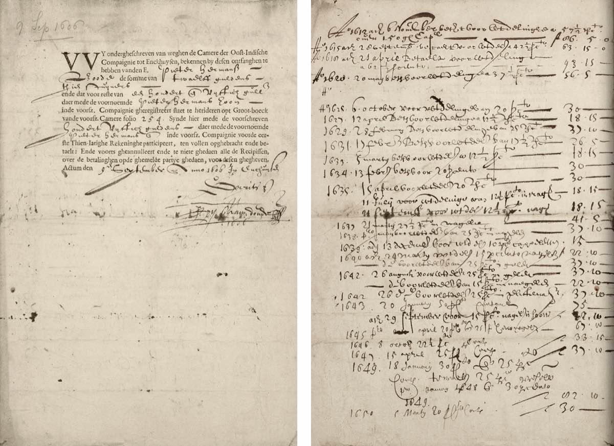
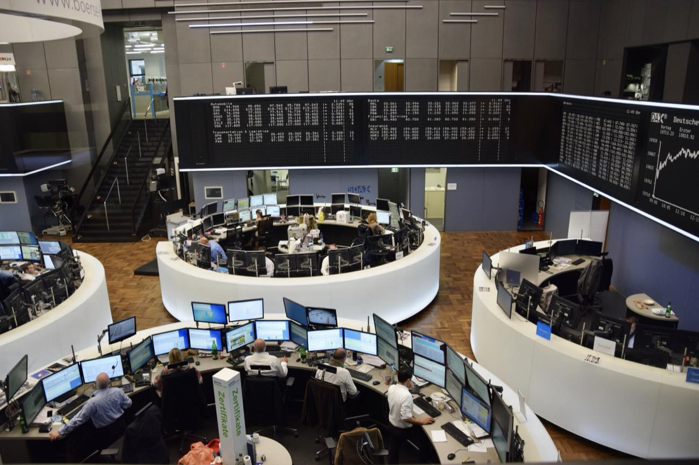
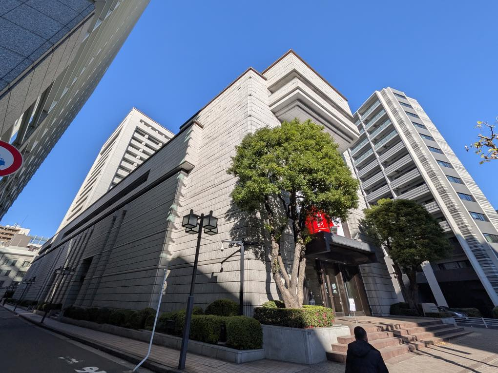
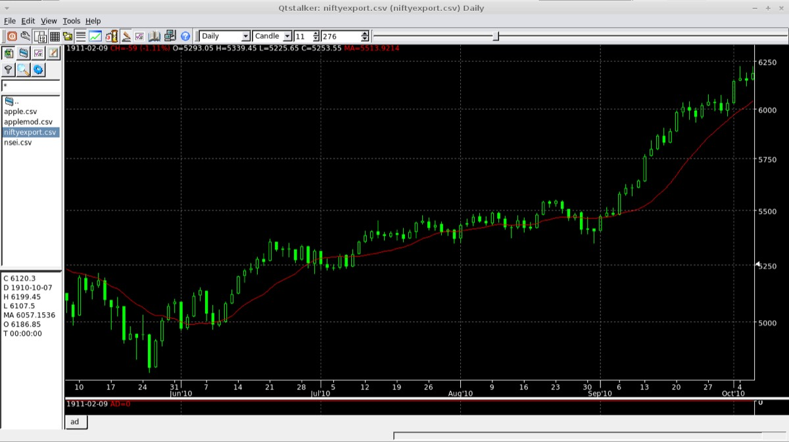
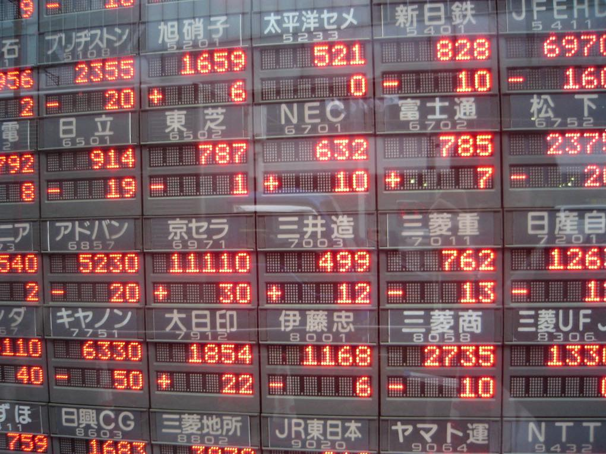
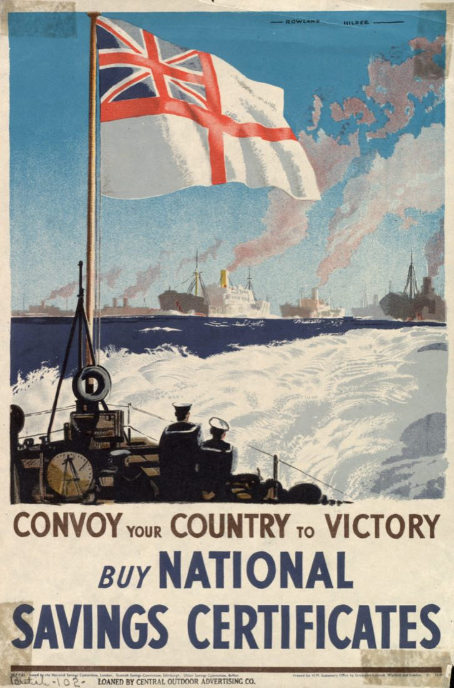
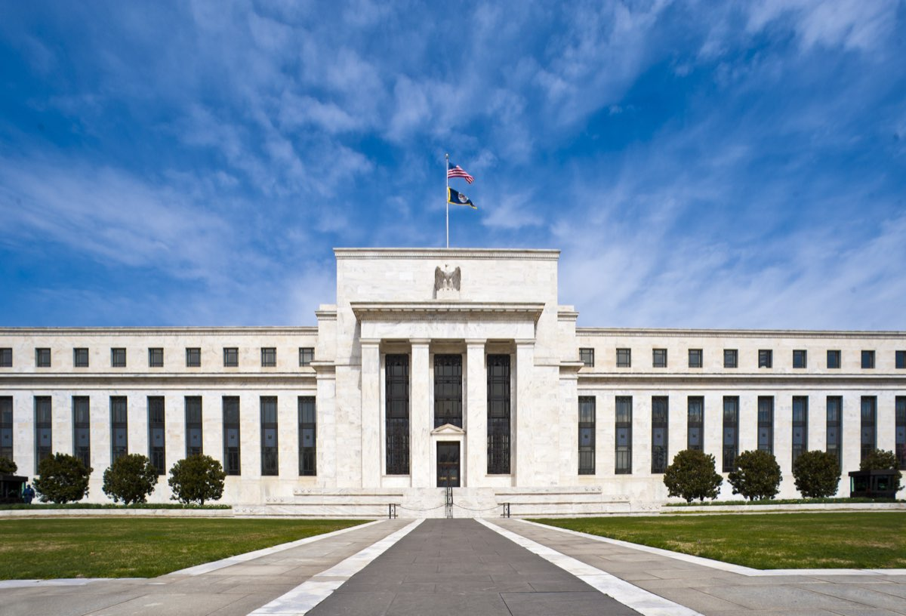
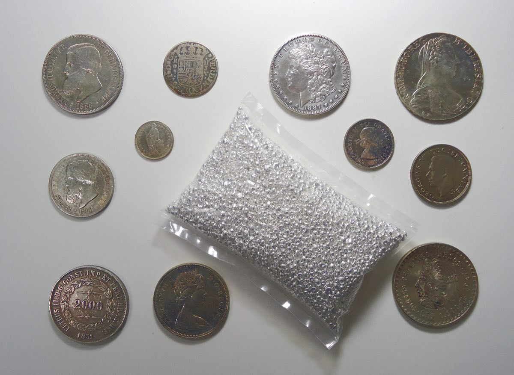
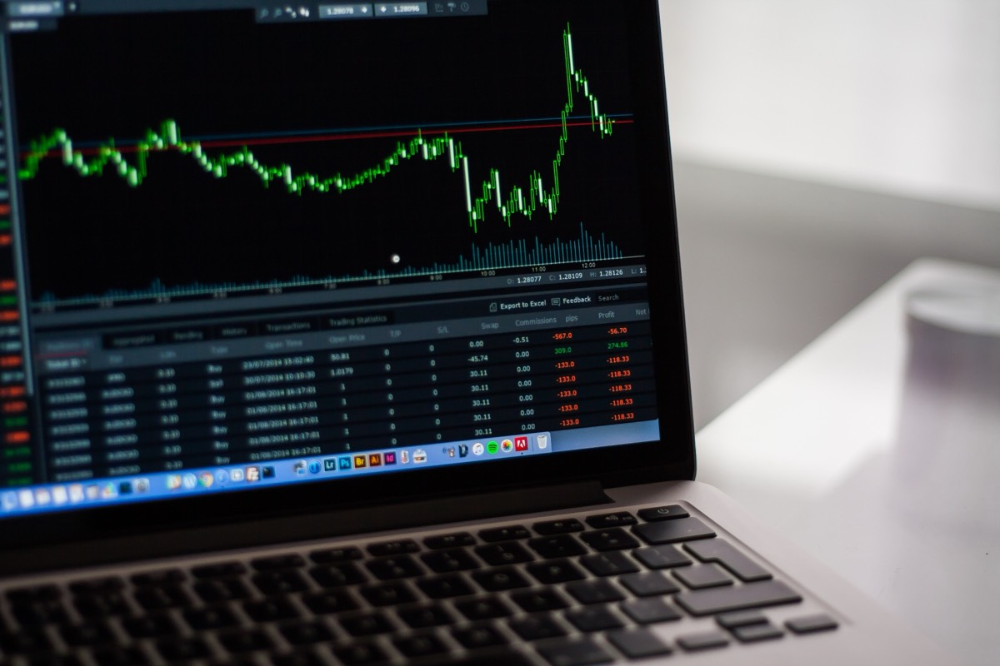

先讲一件真实发生的事。一位学长投入 13 万元本金买股票，这段时间账户只剩 10 万——硬生生亏掉了 3 万元。听到这个数字，多数人的第一反应大概有两个：一是"太吓人了"，二是"股票这东西是不是不能碰"。
这两个反应都很自然，但都不是这本书想给出的答案。这本书要帮助读者回答一串更根本的问题：他买的到底是一张什么东西？那 3 万块钱是"蒸发"了还是进了谁的口袋？亏损 23% 在这个市场里算意外还是算常态？如果换一种买法，结局会不会不同？
这些问题一层比一层深，而它们的地基是同一个概念——股票（stock / share）到底是什么。绝大多数亏钱的人，是在没搞清这个地基的情况下就把钱放了进去：他们买的不是"公司的一部分"，而是"一个会跳动的数字"，涨了高兴，跌了恐慌，最后在恐慌里把亏损变成现实。
还有一个理由让这本书值得慢读：刚满十八岁的读者，此前法律不允许开立证券账户，所以"从来没了解过"不是个人的疏忽，而是制度使然。现在门开了，门后面既有人类最精巧的制度发明之一，也有专门为新来者准备的镰刀。进门之前，先看清楚这扇门。
全书涉及行情和价格的数字，核实时点均为 2026 年 7 月，之后一定会变，但机制不会。下面是九站的路线图。
股票到底是一张什么东西
1.1 从一家奶茶店开始：公司与股份
暂时忘掉股市。假设四个同学凑钱在科大东区门口开一家奶茶店，总共需要 20 万元：甲出 10 万，同学 A 出 6 万，同学 B 和 C 各出 2 万。
钱凑齐之后，一个必须回答的问题出现了：这家店归谁？直觉的答案是"归四个人共有"，但"四个人共有"是个模糊的说法——赚了钱怎么分？要不要开分店谁说了算？将来 B 想退出，他能带走什么？
人类给这个问题发明的标准答案，是把"这家店"变成一个抽象的东西——公司（company），然后把公司的所有权切成标准化的等份，按出资比例分给每个人。比如把这家奶茶店公司切成 20 万份，每份对应 1 元出资：甲持有 10 万份，占 50%；A 持有 6 万份，占 30%；B 和 C 各占 10%。这里的每一份，就是一股（share）；一个人持有的全部份额，就是这个人的股份；持有股份的人，就是股东（shareholder）。
这个"切片"动作看起来平平无奇，其实一次性解决了三个大问题。
第一，分配有了公式。年底店里赚了 10 万元净利润，大家决定拿出 6 万分掉，每股分 0.3 元，按股份算就是：
没分掉的 4 万元也没有消失：它留在公司里买新设备、开分店，让公司本身变得更值钱——而公司是四位股东的，留存利润同样在为股东工作，只是换了一种形态。这个把利润按股份分给股东的动作，叫分红（dividend，股息）。
第二，决策有了规则。要不要开分店这类大事，开股东会投票，一股一票。甲持股 50%，话语权最大，但如果 A、B、C 联手（30% + 10% + 10% = 50%）也能与之抗衡。"谁出钱多谁说了算"被精确化成了可计算的投票权。
第三，退出有了通道。B 想退出，他不需要拆掉店里十分之一的吧台——他只需要把手里那 2 万股卖给愿意接手的人。店照常营业，只是股东名册上换了个名字。股份是可以转让的，而且转让价格不必等于当年的出资价：如果店生意红火、一年净赚 10 万，B 那 10% 的股份（每年对应 1 万利润）可能卖出 5 万甚至更高的价格；如果店濒临倒闭，2 万元的出资可能只卖得出 5 千。股份的价格，取决于买卖双方对这家公司未来赚钱能力的判断——这句话是第四章的基础，值得记住。
现在可以给出本书的第一个正式定义了：股票，就是股份公司所有权的标准化切片。持有一股，就按比例拥有这家公司的一小部分——包括它的资产、品牌、赚钱能力，以及未来。
在券商软件里看到的"贵州茅台 600519"，和奶茶店的股份在本质上是同一种东西，没有任何神秘之处。区别只在规模和包装：茅台被切成了约 12.6 亿股，切片在交易所里每天被成千上万人买卖，价格每几秒跳动一次。跳动的数字容易让人忘记它背后是一家真实的公司——酒厂、窖池、经销商、每年实实在在的利润——而奶茶店的例子之所以值得先讲，就是因为它剥掉了跳动的数字，让所有权这个内核露出来。
1.2 一个四百年前的发明：股份为什么被切成这样
一个自然的问题是：这套"切片"制度是谁想出来的？答案值得讲，因为它不是书斋里的设计，而是被一个具体的商业难题逼出来的。
十七世纪初，荷兰人想做一门利润高得惊人的生意：派船队远航亚洲运香料。一趟航程利润可以翻几倍，但风险同样惊人——风暴、海盗、疾病，船队全军覆没是家常便饭。这门生意的数学结构很残酷：单次下注可能血本无归，但足够多次下注的期望收益极高。问题是，当时没有任何一个商人富到能独自承担"血本无归"这个结果。
1602 年，荷兰人给出的解法是成立荷兰东印度公司（VOC），并做了两件此前没人系统做过的事。
第一件：向公众发行可转让的股份。不是找三五个合伙人，而是让阿姆斯特丹的市民——商人、工匠、甚至女仆——都可以出钱认购股份，按份分享未来所有航程的利润。每个人只承担自己出资那一小份的风险，而公司聚起的资本足以派出一支又一支船队。风险被切碎摊薄了，大资本被聚起来了——这正是股份制的第一重魔力：它让"没有任何个人敢做的事"变成"很多人合起来敢做的事"。

第二件：让股份可以随时转手。VOC 的特许状写明公司要存续 21 年，但出资人不必等 21 年——想退出，把股份卖给别人就行。为了撮合这种买卖，阿姆斯特丹出现了世界上第一个正式的证券交易所。从此，"投资一家公司"和"随时可以离场"这两件原本矛盾的事被同时满足了：公司拿到的是长期资本（钱进了公司就不用还），股东享有的是短期流动性（随时可以把股份变现给下一个人）。
第二件事的精妙之处值得体会。公司造船、建仓库、囤香料，这些钱一旦投下去就是十年二十年的承诺；可出资人的生活等不了二十年。股份转让制度像一个转换器，把公司需要的"永久资本"和个人需要的"随时退出"焊接在了一起。今天在手机上三秒钟卖出一手股票，动用的仍然是这个四百年前的转换器。
这套制度后来传遍世界，驱动了运河、铁路、电力、汽车、互联网——几乎每一轮需要巨额资本的技术革命，背后都是无数陌生人通过"买股份"把钱汇成洪流。2026 年的今天也不例外：近年来备受关注的 SpaceX 为造星舰和星链累计消耗了天文数字的资本，OpenAI 和 Anthropic 为训练大模型一轮一轮地融资——用的仍然是"出让所有权切片、换取发展资本"这同一个模子。他们的故事是下一章的主角。
把股份制与分布式系统对照理解颇有启发：它本质上是人类在"风险"这个工程问题上的一次架构升级。单个商人 all-in 一支船队，是单点故障；股份制把故障域切成了两万份，任何一份的损失都不致命，于是系统整体敢于承担远超任何个体承受力的风险。四百年后的风险投资、再保险、甚至互联网的容错设计，用的都是同一个思想：切碎、分摊、然后去做原本不敢做的事。金融的底层和分布式系统的底层，惊人地相通。
1.3 买一股，就是真的股东
回到今天。当一位投资者在券商 App 里花几百元买入某公司 100 股，获得的不是一张彩票，也不是一个游戏筹码，而是与奶茶店股东、与 1602 年认购 VOC 的阿姆斯特丹市民法律地位相同的东西：成为这家公司的股东，登记在册。哪怕只持有 100 股、占总股本的千万分之一，权利的性质不打折扣，只是按比例缩小。
具体来说，股东身份带来三样东西。
第一样：分红权。公司赚了钱、董事会决定分红时，按股分钱，一股不少。以中国的银行股为例：工商银行 2025 年净利润约 3,669 亿元——这个数字超过很多中等国家一年的财政收入——它历年会把相当一部分利润以现金形式分给股东，钱直接打进证券账户，持有人什么都不用做。贵州茅台这类公司近年每股每年分红在几十元的量级；如果持有 100 股，每年夏天会收到几千元现金。这不是比喻，是银行流水上真实的一笔入账。
第二样：投票权。股东大会表决增发、并购、分红方案、董事人选时，这 100 股就是 100 票。现实地说，散户的票数对结果几乎没有影响——但这个权利的存在本身很重要，它是"持有者是所有者而不是客户"的法律证明。而且投票权在某些公司被设计得很有戏剧性：Google 的创始人持有一种一股顶十票的特殊股份，用不到一半的经济利益握住了公司的控制权——这个设计留到下一章细讲。
第三样：剩余索取权。这是最少被提起、却最能说明"所有权"三个字份量的一项：如果公司清算，卖掉全部资产、还清全部债务之后，剩下的钱按股份分给股东。股东排在所有债主的后面，是最后拿钱的人——公司糟糕时这意味着大概率一分不剩，公司伟大时这意味着上不封顶。债主最多拿回本息，而股东分享全部剩余——风险的下限和收益的上限，都归所有者。这一条是股票与债券（第五章）的分水岭。
把三样东西放在一起，会发现它们描述的其实是同一件事的三个侧面：这家公司每年赚的钱、积累的资产、以及未来的一切可能性里，有属于股东的一个比例。市值 5 万亿美元的英伟达（2026 年 7 月，全球市值第一）和宿舍楼下的奶茶店，在这一点上完全同构。
1.4 收益从哪里来：全书的主线问题
现在引出这本书每一章都要问的问题：收益从哪里来？对股票，答案有两条腿。
第一条腿：分红。来源清楚——公司经营赚到真金白银，分给所有者。只要公司持续赚钱，这条腿就持续产出，与股价涨跌无关。有一类投资者几乎只看这条腿：他们买入高分红的银行、电力、公路股，像收房租一样每年收股息，股价的波动被他们视为噪音。
第二条腿：价差。低买高卖，赚下一个买家的钱。这条腿刺激得多，也危险得多——学长的 3 万元就是在这条腿上亏掉的（他买入后价格下跌，账面缩水；如果他卖出，浮亏落地，钱实际上是在更高价位付给了卖他股票的前股东）。
关键问题是：第二条腿的收益，底层是什么？为什么会有人愿意用更高的价格接手这些股份？
有一个流传很广的阴暗答案："股市就是击鼓传花，赚的都是下家的钱，最后总有人接盘。"这个说法对娱乐性炒作（以及第八章要讲的某些骗局）是成立的，但作为对整个股市的描述，它漏掉了地基。回到奶茶店：B 的股份能卖出比出资价高的价格，不是因为找到了更傻的下家，而是店真的一年比一年赚钱——每股对应的利润从 0.3 元涨到了 0.6 元，切片背后的东西变厚了，切片自然更值钱。股价长期上涨的底层，是公司利润的增长；价差收益在长期里，本质上是提前定价的未来分红。苹果公司 1980 年上市时全公司市值不到 18 亿美元，2026 年约 4.8 万亿美元——涨了两千多倍，支撑这个数字的不是击鼓传花的鼓点，而是 iPhone 每年数千亿美元的真实收入。
但"长期里"三个字是有重量的。在几天、几个月的尺度上，价格波动和公司赚不赚钱可以毫无关系，纯粹由情绪、资金、消息驱动——这正是学长的 3 万元在几个月里消失的机制，整个第四章将专门讨论它。此刻只需记住这个分层：
股票收益 = 公司创造的价值（分红 + 利润增长） + 市场情绪的波动（短期可正可负，长期趋近于零）。
第一项是正和游戏：公司把蛋糕做大，所有股东一起受益。第二项是零和游戏：一方赚的就是另一方亏的。绝大多数普通人亏钱，是因为他们以为自己在玩第一个游戏，实际上在玩第二个。
1.5 买得到的和买不到的：通往第二章
最后回答一个几乎人人都想过的问题。既然股份天然存在于每家公司——奶茶店有、华为有、SpaceX 也有——那为什么苹果的股票打开 App 就能买，而 SpaceX 的股份在 2026 年 6 月之前有钱也买不到？
因为"股份存在"和"股份公开出售"是两回事。公司分两种。
非上市公司：股份只在小圈子里转让——创始人、员工、专业投资机构。外人想买，既找不到卖家，也没有法定的公开价格。前面那家奶茶店、华为、老干妈、上市前的 SpaceX 和今天的 OpenAI、Anthropic、DeepSeek 都是这一类。这不代表它们的股份没有价值——恰恰相反，OpenAI 最近一轮融资的估值超过 8,500 亿美元，Anthropic 超过 9,600 亿美元——只是这些价值在一个不对公众开放的市场里流转。
上市公司：把股份挂到证券交易所，任何有账户的人都可以买卖，价格公开、实时、对所有人相同。苹果、茅台、英伟达是这一类。
从前一类变成后一类的那一跳，叫上市（IPO）——它是一家公司资本生涯里最重大的一次变身，牵扯到融资、造富、权力、监管的全部戏码。为什么有的公司挤破头要上？为什么华为和老干妈死活不上？为什么马斯克说了十三年"SpaceX 不上市"，却在 2026 年 6 月完成了人类历史上最大的一次 IPO——然后一个月内破发？"每股 135 美元"这种数字到底该怎么读？
这些正是第二章的内容。带着已经建好的地基——股票是所有权的切片，收益来自公司创造的价值加市场的情绪——接下来去看这场大戏。
- 股票是公司所有权的切片：持有一股就按比例拥有这家公司的资产、赚钱能力与未来；后面所有章节都建立在这句话上。绝大多数亏损的起点，是把股票当成"会跳动的数字"。
- 切片一次解决三件事：利润怎么分（分红）、大事谁说了算（投票）、想走怎么退（转让）；股份的转让价格反映买卖双方对公司未来赚钱能力的判断。
- 股份制是 1602 年被"高收益、高风险、大资本"的远洋贸易逼出来的发明；交易所存在的原始意义，就是给退出通道提供撮合场所。
- 股东三项权利：分红权、投票权、剩余索取权——下无保底（排在债主后面），上不封顶（分享全部剩余）。二级市场买股票的钱付给前一个股东，不进公司账户。
- 股票收益两条腿：分红与价差；价差的长期底层是利润增长，短期底层是情绪与资金。长期正和、短期零和，搞混这两层是散户亏损的第一大思想根源。
- "股份存在"和"公开出售"是两回事——上市（IPO）是两个世界之间的那一跳，第二章的主题。
上市：一家公司的成人礼
2.0 导言：有钱也买不到的股票
第一章结尾留了一个问题：为什么苹果的股票打开 App 就能买，而 SpaceX 的股份，在 2026 年 6 月之前有钱也买不到？
这个问题在 2026 年问出来格外有意思，因为答案刚刚当着全世界的面翻篇了。2026 年 6 月 12 日，SpaceX 在纳斯达克挂牌，代码 SPCX，募资 750 亿美元——人类证券史上最大的一次首次公开发行。而在此之前的十三年里，马斯克反复公开表示这家公司不会上市，理由写得掷地有声：股市的短期情绪会干扰殖民火星这个需要几十年的使命。
一家公司从“股份只在小圈子里流转”走到“任何人都能在手机上买一股”，中间隔着一整套制度、一群专业玩家和一场盛大的仪式。这一章就沿着这条路走一遍。读者将看到 OpenAI、Anthropic、DeepSeek 如何在不上市的状态下融到天文数字的钱；看到 SpaceX 的十三年拉锯如何收场；看到 IPO 定价这门手艺如何在 Circle 身上失手；也会看到华为和老干妈为什么一辈子不进这扇门。走完之后，“IPO”“估值”“每股 135 美元”这些新闻里的词，就不再是黑话。
但在出发之前，必须先立起一个比 IPO 本身更重要的框架——它能解释读者以后会遇到的大半困惑。
2.1 一级市场与二级市场：这笔钱到底给了谁
金融里有一对术语，名字起得毫无想象力，但含义必须刻在脑子里：
一级市场（primary market）：公司发行新股份换钱的地方。钱从投资者手里出发，进入公司账户，变成实验室、工厂、工资。公司的股份总数变多了，每个老股东的比例被稀释了一点，换来的是公司多了一笔发展资金。融资、IPO、增发，都发生在一级市场。
二级市场（secondary market）：已经存在的股份换手的地方。钱从买家手里出发，进入卖家（上一个股东）口袋，公司一分钱拿不到，只是股东名册改了个名字。投资者日常在券商 App 里做的每一笔交易，几乎都在二级市场。
第一章那个警示框说过“买股票的钱不进公司”，指的就是二级市场。现在可以把整幅图补全了：公司只在一级市场拿到钱；二级市场的意义，是让一级市场的出资人有路可退。还记得 1602 年阿姆斯特丹的那个转换器吗——公司拿长期资本，股东留退出通道？一级市场就是“拿资本”的那一端，二级市场就是“退出通道”那一端。两者缺一不可：没有一级市场，公司融不到钱；没有二级市场，一级市场就没人敢出钱——谁愿意把钱投进一个永远出不来的东西？
这个框架立起来之后，很多新闻立刻可以读懂了。“OpenAI 完成新一轮融资”——一级市场，钱进了 OpenAI。“某大股东减持套现 50 亿”——二级市场，钱进了那位股东的口袋，公司没拿到也没损失什么。“公司回购股份”——方向反过来的一级市场行为，公司掏钱把切片买回来注销，剩下每股占的比例变大。判断任何一条资本新闻的第一步，都是先问：这笔钱，进的是公司的账户，还是某个股东的口袋？
2.2 上市之前：一轮一轮的融资
一家公司从车库走到交易所，中间通常要在一级市场里融资很多轮。这条链路有一套标准叫法：最早期朋友和天使投资人（angel investor）给的钱叫天使轮；随后风险投资（venture capital, VC）机构入场，按先后叫 A 轮、B 轮、C 轮……每一轮都是同一个动作的重复：公司发行一批新股份，投资人出钱认购，双方谈定的“这家公司整体值多少钱”就是估值（valuation）。
估值这个词要祛魅一下：它不是什么科学测量的结果，就是这一轮买卖双方讨价还价谈出来的价格，乘以总股份数。下一轮谈崩了，估值可以掉头向下。而 2025 到 2026 年，人类历史上最猛的一串融资轮次恰好发生在当下最受关注的行业——不妨把三家 AI 公司并排放着看，它们展示了一级市场的三种活法。
OpenAI：把融资做成了阶梯。这家公司的结构本身就是一部演变史：2015 年以非营利组织成立，2019 年为了融资设立了利润上限子公司，2025 年 10 月完成重组，营利实体变为公共利益公司（Public Benefit Corporation, PBC），仍由非营利基金会控制，微软持有约 27%。它的融资阶梯陡得晕眩：2025 年 3 月，软银领投 400 亿美元，投后估值 3,000 亿美元，当时已是史上最大私募融资；仅一年后的 2026 年 3 月，新一轮融资 1,220 亿美元收官，投后估值 8,520 亿美元——亚马逊一家就投了 500 亿，英伟达、软银各 300 亿。注意这些钱全部发生在一级市场：没有任何散户参与，普通人只能在新闻里围观。
Anthropic：五轮融资，估值反超。Claude 的开发商走的是更密的节奏：2025 年 3 月 E 轮估值 615 亿美元，9 月 F 轮 1,830 亿，2026 年 2 月 G 轮 3,800 亿，2026 年 5 月 28 日 H 轮融资 650 亿美元、投后估值 9,650 亿美元——就在这一轮，它超过 OpenAI 成为全球估值最高的 AI 初创公司。它的两大金主写进了教科书级的条款：Google 累计承诺投资至多数百亿美元，但合同明确约定持股上限 15%；亚马逊也承诺了至多 250 亿美元的追加投资。为什么金主愿意接受持股上限？因为 Anthropic 和 OpenAI 一样是 PBC，还设有长期利益信托（Long-Term Benefit Trust）——出钱可以，控制权免谈。2026 年 6 月 1 日，Anthropic 已向美国证监会秘密递交上市申请草案，这家公司正站在本章两个世界的门槛上。
DeepSeek：拿钱，不给话语权。深度求索是最特别的样本。它由梁文锋通过自己的对冲基金幻方量化全资供养，成立以来一直拒绝外部融资——直到 2026 年 6 月，它完成了首轮外部融资：510 亿元人民币，投后估值近 4,000 亿元，创下国内 AI 公司单轮融资纪录。但条款读来令人倒吸一口气：据公开报道，除国家人工智能产业投资基金获得直接股权和投票权外，其余外部投资人通过梁文锋控制的有限合伙间接持股——没有投票权，没有董事席位，股份锁定五年。梁文锋个人穿透后受益股份超过 84%，表决权接近 100%。这是一级市场的一条铁律的极端展示：融资条款是谈出来的，谁稀缺谁定规则。资本挤破头想上车的时候，公司可以只卖“分红权”、不卖“话语权”——第一章讲过股东的三项权利，它们是可以被条款拆开卖的。
三家公司，三种结构，共同点只有一个：普通人一股都买不到。这些股份在一个封闭的市场里流转，参与者是 VC、主权基金、科技巨头。那么问题来了——早期投资人和持有期权的员工，等了十年八年，怎么把纸面财富变成现金？这就轮到 SpaceX 出场了，因为它把“不上市状态下的退出”玩到了极致，然后亲手终结了这个游戏。
2.3 SpaceX：十三年“绝不上市”，与史上最大的 IPO
先听 2013 年的马斯克怎么说。那年 6 月，有传闻说 SpaceX 要上市，他先发推文：“SpaceX 近期没有 IPO 计划。只有当火星殖民运输船定期飞行之后，才有可能。”随后又给全体员工写了一封流传甚广的邮件，核心意思有两层：第一，“在火星上建立生命所需的技术，是且始终是 SpaceX 的根本目标”；第二，公开市场的“非理性狂热或抑郁”（irrational exuberance or depression）会绑架公司——股价暴涨时员工无心工作，股价暴跌时人心涣散，而火星这件事需要几十年不受干扰的专注。邮件里他还顺带嘲讽了那些自认为能“高点卖出”的员工：真觉得自己比职业基金经理更会择时，就不该在 SpaceX 造火箭，而该去当对冲基金经理。
这封邮件值得认真读，因为它是“公司为什么不想上市”的最佳陈述：上市等于给公司装上一块每秒刷新的记分牌，而有些事业不能按秒记分。
但不上市有一个必须解决的工程问题：员工要吃饭。SpaceX 用期权和股份吸引了大量顶尖工程师，这些纸面财富如果永远变不了现，招聘承诺就是空头支票。SpaceX 的解法是定期组织要约收购（tender offer）——公司牵头，让新老投资机构出钱，按约定价格收购员工手里的股份。这相当于在公司内部搭了一个小型的、一年开张一两次的“准二级市场”。这个内部市场的价格轨迹，就是 SpaceX 估值的心电图：2024 年 12 月，估值 3,500 亿美元；2025 年 7 月，4,000 亿（每股 212 美元）；2025 年 12 月，约 8,000 亿（每股 421 美元）。
心电图在 2025 年 12 月出现异动：就在那次估值 8,000 亿美元的内部转让完成的同时，SpaceX 官宣筹备 IPO。理由和 2013 年判若两司：星舰要达到“疯狂的发射频率”、要建太空 AI 数据中心、要建月球基地——每一项都是千亿美元级的胃口，内部市场和私募融资喂不饱了。2026 年 2 月 2 日，上市前最后一块拼图落定：SpaceX 以全股票交易吞并了马斯克旗下的 AI 公司 xAI（含 X 平台），xAI 作价 2,500 亿美元，合并后的公司整体估值 1.25 万亿美元。
“火星殖民船定期起飞之前，不上市”
马斯克公开否认 IPO 传闻，并致信全员：公开市场的“非理性狂热或抑郁”会绑架需要几十年专注的火星使命。
内部要约收购：估值 3,500 亿美元
不上市状态下的退出通道：公司牵头让投资机构出钱收购员工股份，价格轨迹就是估值的心电图。
心电图加速：4,000 亿 → 约 8,000 亿美元
每股 212 美元 → 421 美元。2025 年 12 月那次内部转让完成的同时，SpaceX 官宣筹备 IPO。
吞并 xAI，整体估值 1.25 万亿美元
全股票交易吞并马斯克旗下的 xAI（含 X 平台），xAI 作价 2,500 亿美元——上市前最后一块拼图。
纳斯达克挂牌：史上最大 IPO
发行 5.556 亿股，每股定价 135 美元，募资 750 亿美元（约为沙特阿美 2019 年纪录的三倍）；认购需求约为发行量四倍；首日收于 160.95 美元，涨约 19%，市值约 2.2 万亿美元。
历史最高 225.64 美元
上市第六天冲顶。如果故事停在这里，它就只是一场加冕礼。
破发：114.25 美元
较 225 美元高点跌去约一半，较 135 美元发行价低约 15%；市值缩水到约 1.56 万亿美元。火箭照发、星链照转——变的只是买卖双方的情绪与资金。
市场立刻安排了第二幕：一个多月后的 7 月 24 日，SPCX 收于 114.25 美元——比 225 美元的高点跌去约一半，比 135 美元的发行价低了约 15%，这叫“破发”。市值缩水到约 1.56 万亿美元，还压着一块石头：7 月下旬起，IPO 时被锁定的约 1,160 亿美元的早期股份陆续解禁，可以入场卖出。公司没有任何变化——马斯克 2013 年警告的“非理性狂热或抑郁”，在他自己公司上市的第一个月里全部上演了一遍。连带效应都是真的：据报道，OpenAI 原本瞄准 2026 年 9 月上市、目标估值 1 万亿美元，因为 SpaceX 的坎坷首秀，顾问们建议推迟到 2027 年。
与其说 2026 年的马斯克“背叛”了 2013 年的马斯克，更准确的读法是：他 2013 年说的每一句都是对的，2026 年做的事也是理性的，两者之间隔着的不是人变了，而是资本需求的量级变了。私募市场的极限大约就是一年几百亿美元，而星舰高频发射加轨道数据中心是万亿级的叙事，地球上只有公开市场这一个池子装得下。这件事的启示是通用的：读商业新闻时，少问“他怎么变卦了”，多问“他的约束条件变了什么”。立场追着约束走，这不是虚伪，这是几乎所有组织行为的第一性原理。
2.4 IPO 的机器房：定价、承销与敲钟
现在把镜头从戏剧拉回机器房，看看 IPO（Initial Public Offering，首次公开发行）在技术上是怎么完成的。
IPO 的本质用一级/二级市场的语言说就是一句话：公司第一次在一级市场向公众发行新股，并同时把全部股份挂到交易所，让它们从此可以在二级市场自由交易。所以 IPO 是一扇单向门：门里是估值靠谈判、股份靠私下转让的世界，门外是价格每秒刷新、任何人可以参与的世界。
这扇门不能自己走过去，要雇承销商（underwriter）——通常是高盛、摩根士丹利这类投资银行。它们做三件事：把公司的家底写成几百页的招股书交给监管机构审核；带着管理层到全球路演，向基金经理们推销；最后，也是最微妙的一步——定发行价。
定价为什么微妙？因为它是一个两头受气的取舍。定高了，没人认购，或者上市首日跌破发行价，公司名声扫地；定低了，股票首日暴涨，看起来喜庆，实际上是公司贱卖了自己的股份——本可以进公司账户的钱，白送给了拿到新股的机构。华尔街管这叫“留在桌上的钱”（money left on the table）。
2025 年提供了一个教科书案例。稳定币公司 Circle 在 6 月上市，发行价定为 31 美元；首日收于 83.23 美元，暴涨 168%，盘中一度冲到 103.75 美元，多次触发临时停牌。财经媒体第一时间算了账：如果发行价定得贴近市场真实需求，Circle 本可以多募约 17 亿美元——这笔钱现在成了首日买到新股的机构的利润。而故事的下半场更有教育意义：Circle 股价在三周后一度冲到约 299 美元，随后漫长回落，2026 年 7 月 25 日只剩 62.10 美元。首日的狂欢与一年后的价格，中间隔着整整一个泡沫的生灭。同期还有一个对照样本：AI 算力公司 CoreWeave，2025 年 3 月以 40 美元发行（发行规模被迫缩减，当时市况冷淡），三个月内冲到 183.58 美元，2026 年 7 月回落到 82.64 美元——仍是发行价的两倍，但较峰值腰斩。
把 SpaceX、Circle、CoreWeave 三个案例放在一起，可以提炼出一个规律：发行价是谈判的产物，上市初期的价格是情绪的产物，一年后的价格才开始向经营成绩靠拢。所以“打新股必赚”和“破发的公司完蛋了”都是错误的推理——首日涨跌只反映定价和情绪的偏差，不反映公司质地。
至于“敲钟”：交易所开市钟原本只是每天宣布交易开始的信号，后来演变成 IPO 的加冕仪式——上市首日请公司创始人去敲。它没有任何实际功能，但作为符号很诚实：钟声一响，这家公司的一部分定价权，从此永久让渡给了市场。
SpaceX 选择的纳斯达克没有交易大厅，敲钟的舞台就是时代广场这块外墙大屏——上市仪式办在闹市，价格生在机房，这个组合本身就是“交易所的本体是撮合引擎”的注脚（第三章的主题）。
2.5 两个载入史册的 IPO：苹果 1980 与谷歌 2004
苹果，1980 年 12 月 12 日，是理解“上市造富”与“长期持有”的完美标本。当天苹果以每股 22 美元发行 460 万股，是 1956 年福特以来美国最大的 IPO；首日收于 29 美元，公司收盘市值 17.78 亿美元，一天之内造出四十多个百万富翁。25 岁的乔布斯持股 15%（750 万股），当天收盘身价约 2.17 亿美元。
更值得算的是后面这笔账。上市之后，苹果做过五次拆股（stock split）：1987 年一拆二，2000 年一拆二，2005 年一拆二，2014 年一拆七，2020 年一拆四。拆股的意思是把每一股切成更多股，2×2×2×7×4 = 224——1980 年买入的 1 股，今天变成了 224 股：
支撑这三千多倍的，是苹果从车库公司长成年入几千亿美元的巨头这件事本身——持股比例一丝一毫没变，零头都不来自拆股。这就是第一章说的“价差的长期底层是利润增长”的极限样本。
谷歌，2004 年 8 月 19 日，贡献了两项制度实验。第一项是定价方式：它跳过了投行主导的传统询价，采用荷兰式拍卖——让所有想买的人公开出价，从高到低排下来，找到恰好卖完全部股份的那个价格，所有人按这个统一价格成交。最终定价 85 美元，募资约 16.7 亿美元，上市市值约 230 亿美元。两位创始人的意图很直白：定价权不交给华尔街，交给出价本身。
第二项影响更深远：双层股权结构（dual-class shares）。谷歌把股票分成两类：A 类股（代码 GOOGL）一股一票，卖给公众；B 类股一股十票，不上市，攥在创始人和早期核心手里。2014 年又拆出了 C 类股（代码 GOOG），一股零票。三类股份分红完全相同，唯一的区别是话语权。效果是：创始人只持有公司一小部分经济利益，却牢牢握着投票的多数——公众的钱进来了，公众的手伸不进来。这个配方其实并不陌生：DeepSeek 2026 年融资时“拿钱不给话语权”的条款，谷歌二十二年前就写好了模板。顺带一提，这也解释了一个常见困惑：为什么股票软件里有两个“谷歌”（GOOG 和 GOOGL）且价格略有不同——它们是同一家公司的不同投票权版本。
2.6 死活不上的公司：华为、老干妈与字节跳动
上一节是挤进门的公司，这一节看三家站在门外、且把理由说得很清楚的公司。它们合起来是一份“上市的代价”清单。
华为：怕的是钱太多。任正非把话说得很透。2016 年他对新华社记者说：“因为我们把利益看得不重，就是为理想和目标而奋斗。……如果上市，股东们看着股市那儿可赚几十亿元、几百亿元，逼我们横向发展，我们就攻不进‘无人区’了。”更早的 2014 年，他有一句更生动的：“猪养得太肥了，连哼哼声都没了。科技企业是靠人才推动的，公司过早上市，就会有一批人变成百万富翁、千万富翁，他们的工作激情会衰退。”注意他怕的两件事，正好对应上市的两大副作用：股东压力扭曲战略方向（逼管理层做短期能兑现的横向扩张，而不是十年才见效的研发深潜），以及一夜暴富瓦解组织动力（这和马斯克 2013 年邮件里的担忧是同一件事）。华为的替代方案是内部虚拟受限股：员工出钱认购、按年分红、离职回购——用一套封闭的准股份制留住“分蛋糕”的功能，挡掉资本市场的一切。
老干妈：不懂，也不屑。陶华碧的原话是市井智慧的标本：“上市、融资这些东西我一概不懂，我只知道一上市，就可能倾家荡产。上市那是欺骗人家的钱……有钱你就拿，把钱圈了，喊他来入股，到时候把钱吸走了，我来还债，我才不干呢。”配套的是她著名的“四不”：不偷税、不贷款、不欠钱、不上市。这段话在金融学上当然说不通——上市不是骗钱——但它包含一个朴素而正确的内核：上市的本质功能是融资，而一家现金流充沛、不需要外部资本的公司，确实没有义务上市。辣酱生意天天收现金，扩产靠利润滚动就够了。上市对它是纯成本：招股书要把家底晒给全世界，季报要向陌生人解释每一个决定，还要迎接做空机构的显微镜。没有收益，全是账单，那就不办。
字节跳动：不上市的公司能长多大？截至 2026 年 7 月，字节跳动仍未上市，据多方报道管理层已暂停所有 IPO 讨论。但它把 SpaceX 那套内部流动性玩出了自己的版本：每半年一次、用公司自有资金回购员工股份——注意这比 SpaceX 更硬核，SpaceX 的要约收购是拉外部投资人出钱接盘，字节是自己掏真金白银。2025 年 8 月那次，在职员工回购价每股 200.41 美元，对应估值超过 3,300 亿美元。更有意思的是价差：同期二级转让市场上，机构之间的字节股份交易对应的估值一路走到 2026 年 4 月的约 6,000 亿美元——同一家公司，内部回购价和外部转让价差了将近一倍。为什么？因为没有公开市场，就没有“唯一的价格”，只有一笔一笔孤立的交易，价格取决于谁在买、多急着卖、锁定条款多苛刻。这个价差本身就是最好的教具：上市最大的技术贡献，是给一家公司装上一个全世界公认的、每秒更新的单一报价。好也罢坏也罢，至少大家吵架时用的是同一个数字。
2.7 “每股 135 美元”到底该怎么读
本章最后，拆掉一个新闻里最常见、也最容易误导新手的数字：股价。
SpaceX 发行价 135 美元，茅台一股一千多元人民币，苹果 322 美元，还有大量三五块钱的股票。新手几乎都会冒出同一个直觉：135 美元是不是太贵了？五块钱的股票是不是便宜货？
这个直觉是错的，而且错得很干净：单独一个股价，什么信息都不包含。原因第一章已经讲过——股票是切片，而一家公司可以随意决定把自己切成多少片。同一家奶茶店，切 20 万股每股 1 元，和切 2 万股每股 10 元，是完全等价的两种切法。真正有意义的数字是把所有切片加起来：
市值（market capitalization）= 每股价格 × 总股数 = 买下整家公司的价格。
比较两家公司的贵贱，永远比市值（以及市值背后对应的利润，第四章讲），永远不要比股价。一股 5 元的公司完全可能比一股 500 元的公司贵得离谱——前者可能切了几百亿股，后者可能只切了几千万股。
拆股现在可以彻底讲穿了。英伟达在 2021 年做过一拆四、2024 年做过一拆十；特斯拉 2020 年一拆五、2022 年一拆三。每次拆股新闻都伴随着“利好”的欢呼，但如前所述：拆股前后市值一分钱不变，持股比例一丝不变，它唯一的实际效果是把每股价格降下来，让小资金买得起一股（在美股，买入单位是 1 股，一股 1,000 美元确实会挡住一部分散户——这是第三章的话题）。把拆股当利好炒作，本质上是在庆祝“披萨被切成了更多块”。
顺手可以把特斯拉的账也算一遍作为练习：2010 年 6 月 IPO 发行价 17 美元，经过 5×3 = 15 倍拆股，当年 1 股相当于今天 15 股；按 2026 年 7 月约 311 美元计，15 × 311 ≈ 4,670 美元，对 17 美元的成本约 275 倍。和苹果那笔账的算法一模一样——先算拆股倍数，再乘现价，才能跨越几十年比较。凡是跨年代谈论股价的场合，不做拆股还原的比较全是错的。
最后，用正确的度量衡看一眼 2026 年 7 月下旬的世界（约数，随时变动）：
| 排名 | 公司 | 市值（美元） |
|---|---|---|
| 1 | 英伟达 | 约 5.1 万亿 |
| 2 | 苹果 | 约 4.7–4.9 万亿 |
| 3 | Alphabet（谷歌） | 约 3.9 万亿 |
| 4 | 微软 | 约 2.8 万亿 |
| 5 | 亚马逊 | 约 2.5 万亿 |
| 6 | 台积电 | 约 2.2 万亿 |
| 7 | 博通 | 约 1.9 万亿 |
| 8 | 沙特阿美 | 约 1.7 万亿 |
| 9 | SpaceX | 约 1.6 万亿 |
| 10 | Meta | 约 1.5 万亿 |
读这张表的正确姿势不是记数字——下个月就变了——而是读结构：前十里八家是科技公司；卖 AI 芯片的英伟达一家，约等于德国全部上市公司之和的量级；上市才一个月的 SpaceX 直接空降第九。这张表是 2026 年这个时代的 X 光片。
2.8 收束：门里门外
这一章展示了完整的两个世界。门外，OpenAI、Anthropic、DeepSeek 们在一级市场里与巨头讨价还价，估值是谈判桌上的数字，退出靠要约收购和内部转让，价格因人而异；门里，苹果、英伟达、以及新来的 SpaceX，每一股都有一个全世界公认、每秒更新的价格，任何一个刚满十八岁的大学生都能买上一股。
上市，就是从“价格靠谈”走进“价格靠市场”的那扇单向门。公司用信息披露、季报压力和控制权风险作为门票，换来公开市场近乎无限的融资能力和一个公允的报价。而接下来自然是下一个问题：门里这个“每秒更新的公认价格”，到底是谁报出来的？在 App 上点下“买入”之后的那几毫秒里发生了什么？为什么 A 股买入最少 100 股，美股却可以只买 1 股？下一章走进交易所这台机器的内部。
- 一级市场发新股换钱、钱进公司；二级市场旧股换手、钱进上一个股东口袋。二级市场不给公司输血，但它是一级市场敢于存在的前提——退出通道。读任何资本新闻的第一问：钱进了公司账户，还是股东口袋？
- 融资轮次（天使→A→B→C…）= 同一动作的重复：发新股、换钱、谈估值。估值是谈出来的价格，不是测出来的真理；股东的三项权利可以被条款拆开卖——DeepSeek 的外部投资人出了 510 亿元，几乎只买到分红权。
- 不上市的公司靠要约收购开退出通道；SpaceX 2026-06-12 上市：发行价 135 美元、募资 750 亿美元（史上最大），首日 +19%，六天见顶 225.64 美元，一个多月后破发至 114 美元——上市那一刻起，公司的记分牌就交给了市场情绪。
- 定价两难：定高了破发难看，定低了“把钱留在桌上”（Circle 首日 +168% = 少募约 17 亿美元）；首日涨跌反映定价偏差与情绪，不反映公司质地。
- 苹果 1980：22 美元发行、五次拆股累计 224 倍、约 3,270 倍全部由公司成长支撑；谷歌 2004：荷兰式拍卖 + 双层股权——同股可以不同权，分红权与话语权是两种可以分开出售的商品。
- 不上市的前提是不缺钱（老干妈的现金流、华为的利润、字节的自有资金回购）；非上市公司没有单一公价——公开市场的核心产品是一个所有人公认的价格。
- 股价单独无意义，市值 = 股价 × 总股数才是公司的价格标签；拆股不创造一分钱价值，跨年代比较必须先做拆股还原。
交易所与价格的形成
3.0 导言：交易大厅已经死了
提到“股市”，很多人脑子里的画面是电影里的纽交所交易大厅：满地纸条，红着眼睛的交易员挥舞手势喊价。这个画面确实存在过——但它早已作古。今天纽交所的大厅更像一个电视演播室，真正的交易发生在新泽西州的数据中心里：交易所的本体，是机房里一台不知疲倦的撮合引擎（matching engine），用微秒级的速度执行一个简单到令人失望的算法。
这一章要做两件事。前半部分打开这台机器，看“股价”这个数字到底是怎么被生产出来的——这半章是纯粹的机制，全世界通用。后半部分回到眼前：作为一个刚满十八岁、马上可以开户的 A 股投资者，面对的具体规则是什么——一手为什么是 100 股、T+1 限制了什么、涨跌停怎么算、每笔交易被谁抽走了多少钱；再对照大洋对岸那套完全不同的设计，顺带把“想买美股怎么办”的合规边界划清楚。
读完这一章，券商 App 里那个密密麻麻的交易界面，就不再有任何一个看不懂的数字。

3.1 订单簿：股价是这样被生产出来的
有一点编程背景的读者，可以用最舒服的方式理解交易所：它维护着一个数据结构，叫订单簿（order book）——本质上是两个按价格排序的优先队列。
想交易的人向交易所提交订单（order），订单分两种：限价单（limit order）声明底线价格——“我要以不超过 10.00 元的价格买 200 股”，如果当前没人接受，它就进入订单簿排队等待；市价单（market order）不排队——“不管什么价，立刻给我买/卖”，直接吃掉队列另一侧当前最好的价格。
订单簿长这样（这就是券商 App 里“五档盘口”的原貌）：
| 方向 | 价格 | 挂单量 |
|---|---|---|
| 卖五 | 10.09 | 4,100 股 |
| 卖四 | 10.08 | 2,200 股 |
| 卖三 | 10.07 | 8,000 股 |
| 卖二 | 10.06 | 1,500 股 |
| 卖一 | 10.05 | 3,000 股 |
| 买一 | 10.00 | 5,000 股 |
| 买二 | 9.99 | 2,700 股 |
| 买三 | 9.98 | 6,300 股 |
| 买四 | 9.97 | 1,200 股 |
| 买五 | 9.96 | 9,800 股 |
买方队列里出价最高的叫买一（best bid），卖方队列里要价最低的叫卖一（best ask），两者之间的缝隙叫价差（spread）。注意此刻没有任何成交——买得最凶的只肯出 10.00，卖得最急的也要 10.05，谁也不让步，市场就这么僵着。
成交发生在有人跨过缝隙的瞬间。假设一位买家提交一张市价买单要 4,000 股：撮合引擎先把卖一的 3,000 股全部吃掉（成交价 10.05），剩下 1,000 股继续吃卖二（成交价 10.06）。两笔成交回报几毫秒内到账，而行情软件上显示的“最新价”跳到了 10.06。
到此可以看清“股价”的真面目了：所谓最新价，只是最近一笔成交的价格，是订单簿被啻噬过程中留下的最新齿痕。没有任何人、任何机构在“制定”股价——它是千万个订单在两个优先队列里互相消耗的副产品。撮合规则也简单得可以一行写完：价格优先（出价高的买单、要价低的卖单排前面），同价格时间优先（先来的排前面）。全球所有交易所的核心算法都是它，四百年前阿姆斯特丹人吼出来的规则，今天跑在 FPGA 上，逻辑一字未改。
这个视角还附赠两个立刻有用的推论。其一：价格涨跌的直接原因只有一个——买方把卖方队列吃穿了价格就涨，卖方把买方队列砸穿了价格就跌。所有的新闻、财报、情绪，都必须先变成订单，才能变成价格；第四章讲“涨跌从哪里来”，讲的就是什么东西驱使人们下单。其二：挂单量薄的股票（冷门小盘股），一张稍大的市价单就能把价格打穿好几档——这叫流动性差。以后看到某些小股票一天暴漶暴跌百分之十几，先别急着找基本面原因，很可能只是订单簿太薄了。
3.2 会遇到的交易所

机器全世界同构，牌子各有不同。投资者以后打交道的主要是这几家。
中国内地：上海证券交易所和深圳证券交易所（均成立于 1990 年）——茅台、工商银行在上海，宁德时代、比亚迪在深圳；上交所旗下另设科创板（2019 年开板，主打硬科技），深交所旗下有创业板；还有 2021 年开市、服务中小企业的北京证券交易所。股票代码就能认出属地：600/601/603 开头是沪市主板，688 是科创板，000 是深市主板，300 是创业板。
美国：纽约证券交易所（NYSE）与纳斯达克（Nasdaq）双雄。纳斯达克 1971 年成立时就是全电子交易所（从没有过交易大厅），历史上以接纳科技公司著称——苹果、微软、英伟达、以及 2026 年新来的 SpaceX 都挂在这里。
中国香港：香港交易所（HKEX），腾讯、美团在此上市，也是很多内地公司的第二上市地。它对跨境投资的意义，后面讲跨境投资时会出现。
同一家公司可以在多地上市（比如阿里巴巴同时在纽约和香港挂牌），不同交易所的规则可以差异巨大——这正是接下来两节的主题：同样一台撮合机器，中国和美国给它包上了两套截然不同的规则外壳。
3.3 A 股规则手册：单位、时间、涨跌停与 T+1
以下是开户后真实面对的规则，全部为 2026 年 7 月现状。规则会变（2026 年 7 月刚变过一批），机制思路不会。
交易单位：一手 = 100 股，但只限买入。常听说的“最少 100 股”基本正确，精确表述是：主板和创业板买入必须以 100 股（一手）为单位，100、200、300 股地买；卖出不受此限——因为送股、配股会产生零头，所以可以卖出 137 股这种零股。科创板另有一套：单笔申报最低 200 股，超过 200 股的部分可以按 1 股递增（可以买 201 股、237 股）。所以“茅台一股一千多，买不起”的正确版本是：买茅台最少一手，门槛十几万元——这也是第七章讲基金时会回收的一个痛点。
交易时间与四个阶段。A 股每个交易日的时间表是一台精确的机器：9:15–9:25 开盘集合竞价（所有人挂单但不成交，9:20 后不许撤单，9:25 由系统算出一个能让成交量最大的单一价格作为开盘价——这是订单簿的另一种玩法：攒一堆订单一次性出清）；9:30–11:30 和 13:00–14:57 连续竞价（就是 3.1 节讲的实时撮合）；14:57–15:00 收盘集合竞价（生成收盘价，防止最后几秒的价格操纵）；15:05–15:30 盘后固定价格交易——按当天收盘价接受申报、时间优先成交，2026 年 7 月 6 日的新规刚把它从科创板推广到全部 A 股和 ETF。
涨跌停板：给波动装限速器。A 股对单日涨跌幅设了硬顶：主板 ±10%（2026 年 7 月 6 日起 ST 股也统一为 10%，此前是 5%）；创业板、科创板 ±20%；北交所 ±30%。触及涨停时买单堆积但没人卖，想买也买不到（跌停反之，想卖卖不掉）。这是 A 股与美股最大的观感差异之一：A 股不可能出现单日腰斩，但代价是极端行情下流动性直接冻结——跌停板上，卖方只能排队看着。
T+1：今天买的，明天才能卖。A 股实行 T+1 交易限制：当天买入的股票，最快次一交易日才能卖出。官方的逻辑是保护中小投资者、抑制过度投机——证监会 2025 年重申现阶段不搞 T+0，给出的理由是持股市值 50 万元以下的小散户占比高达 96%。对这个家长式逻辑可以不认同，但必须把规则刻进操作习惯：在 A 股，每一次买入都是一张当天无法撤销的单程票，买错了也要拿到第二天。网上不时流传“A 股要搞 T+0 了”的消息，截至 2026 年 7 月全部是谣言或对盘后交易新规的误读。
3.4 交易成本：三笔小钱，和一个专坑小额的陷阱
每笔 A 股交易，有三只手从投资者口袋里拿钱（2026 年 7 月标准）：
算一笔标准账：买入 1 万元股票再原价卖出，佣金按万 2.5 计——买入付佣金 2.5 元 + 过户费 0.1 元，卖出付佣金 2.5 元 + 过户费 0.1 元 + 印花税 5 元，合计约 10.2 元，约占本金的 0.1%。看起来无关痛痒？两个提醒。
第一个是复利视角：0.1% 是单次往返的成本，如果一年换手五十次（很多散户做得到），仅摩擦成本就吃掉本金的 5%——跑赢市场已经够难了，先给自己挖 5% 的坑是何苦。频繁交易是向券商和税务局做慈善，这句话后面还会反复出现。
第二个是针对小资金的专属陷阱：
3.5 美股对照：另一套设计哲学
把 A 股的规则手册翻译到美股，几乎每一条都是反的。这不是谁抄错了作业，而是两套刻意的设计哲学：A 股处处装护栏，默认投资者需要被保护；美股处处给自由，默认风险自负。
交易单位：1 股起，还可以买零点几股。美股最小买入单位是 1 股，没有“手”的概念。更进一步，主流券商普遍支持碎股（fractional shares）交易——最低一美元就能买入“0.003 股”某公司。所以在美股，“股价太高买不起”几乎不成立，这也让第二章讲的拆股进一步丧失实际意义。
没有涨跌停，但有熔断。个股单日涨跌 30%、50% 都是合法的（另有针对个股的临时波动限制机制）。全市场层面设三级熔断（circuit breaker）：标普 500 指数较前收盘下跌 7%、13% 时各暂停交易 15 分钟，跌 20% 当日直接休市。熔断极少触发——设计意图就是“几乎永远用不上的保险丝”，2020 年 3 月疫情恐慌时一个月内触发四次一级熔断，已经是载入史册的异常。
交易时段更长。除常规时段（美东 9:30–16:00，对应北京时间深夜）外，还有盘前（4:00–9:30）与盘后（16:00–20:00）交易，财报通常在盘后发布，价格反应立刻在盘后时段展开——流动性差、价差大，但自由开放。
交易限制与成本。当天买入当天可卖（结算是 T+1，见上一节的消毒框）；没有印花税（对照：A 股卖出 0.05%，港股买卖双边各 0.1%），监管规费低到近似于零，主流互联网券商佣金普遍为零。美股的交易摩擦成本几乎可以忽略——注意这是双刃剑：它同样让“频繁交易”这个恶习失去了最后一道物理阻力。
- 买入以一手 100 股为单位（科创板 200 股起）
- 涨跌停：主板 10% / 双创 20% / 北交所 30%
- T+1：当天买入，次日才能卖
- 印花税卖出 0.05% + 佣金常见万 1–万 2.5
- 警惕“最低 5 元佣金”对小额的杀伤
- 1 股起买，主流券商支持碎股（约 1 美元起）
- 无涨跌停；全市场三级熔断 7% / 13% / 20%
- 当天买入当天可卖（T+1 是结算周期）
- 无印花税，主流互联网券商零佣金
- 盘前 4:00–9:30、盘后 16:00–20:00 也可交易
一句话总结两套哲学的取舍：A 股的护栏在极端时刻会冻结流动性（跌停卖不出），美股的自由在极端时刻让人直面深渊（一夜腰斩没人拦）。没有哪套更“先进”，但投资者必须知道自己站在哪套规则里。
3.6 中国人想买美股：合规的路，和必须知道的红线
看完对照，一个自然的念头是：英伟达、苹果都在美股，能不能买？这一节把路径和红线一次说清——这部分内容很多网络攻略讲得含糊甚至错误，务必以此为准再自行核实。
合规路径一：QDII 基金（门槛最低）。QDII（合格境内机构投资者）是国家批给基金公司的官方出海额度，投资者在境内用人民币买 QDII 基金，基金公司代为投资海外市场，完全合规。跟踪纳斯达克 100 指数的场内基金（如代码 513100）是最常用的工具。但要睁大眼睛看它的溢价：因为官方外汇额度紧张、基金长期限购，场内价格常常高于其真实净值——2026 年上半年溢价率一度在 4% 以上，且基金公司反复发布溢价风险提示。溢价买入意味着：就算纳斯达克不跌，溢价回落也亏。QDII 的机制细节放在第七章基金部分展开。
合规路径二：港股通（门槛 50 万）。开通港股通可以直接买香港上市的股票（腾讯、美团，以及众多在港二次上市的公司），门槛是开通前 20 个交易日证券账户日均资产不低于 50 万元人民币。对大多数刚起步的投资者显然不现实，先记住有这条路。
灰色地带：直接开境外券商账户。网上大量攻略教人开某些境外互联网券商的账户直接炒美股。有三个事实必须知道：其一，富途、老虎这两家曾经最流行的平台，已被中国证监会认定为“未经核准面向境内投资者开展跨境证券业务、构成非法经营”，2023 年 5 月起 App 从境内应用商店下架（存量老客户可继续交易，新客户不再受理）；其二，就算通过其他境外券商开了户，资金出境环节踩着明确的红线——个人每年 5 万美元的便利化购汇额度，申报用途中明文排除境外买房和境外证券投资；其三，违规后果不是抽象的：可被列入外汇关注名单、取消两年购汇额度、并处罚款。
这本书对这条路的态度只有一句话：红线在哪里已经划清，这本书不教任何绕过它的方法。以初学者的资金量，QDII 已经完全够用；等资金和认知都成长了，规则也可能已经变了，到时候再做功课。
3.7 收束：机器已经看懂，接下来看人
盘点一下这一章拿到的东西：股价是订单簿里两列优先队列互相消耗的副产品，没有任何人在“制定”它；A 股的一手 100 股、四段交易时间、涨跌停、T+1 和三笔成本，加上美股那套反着来的自由设计，都已讲清；出海投资的合规边界也划出来了。
关于“市场怎么运转”的机器部分，到此全部讲完。但一个更深的问题始终悬着：机器只负责撮合，是什么驱使人们在 10.05 元挂出卖单、又是什么驱使另一群人不惜一切吃掉它？为什么同一家公司，昨天大家抢着买，今天抢着卖？学长那 3 万元，恰恰不是亏在机器上——机器对他分毫未取——而是亏在机器两端的人心上。下一章讨论这本书里最难也最重要的问题：价格为什么会动。
- 交易所的本体不是大厅，是撮合引擎。订单簿 = 买卖两个优先队列；撮合规则 = 价格优先、时间优先；股价没有制定者，“最新价”只是最近一笔成交价。
- 涨跌的直接机制：买方吃穿卖队 → 涨；卖方砸穿买队 → 跌。一切消息必须先变成订单才能变成价格；订单簿薄的小盘股一天 ±10% 可能只是流动性问题。
- 买入单位：主板/创业板 100 股起步、整手递增；科创板 200 股起、超出部分可 1 股递增；卖出可以有零股。一天四阶段：开盘集合竞价 → 连续竞价 → 收盘集合竞价 → 盘后固定价格交易（2026-07 起全市场）。
- 涨跌停 = 单侧流动性冻结；A 股 T+1 = 当天买次日才能卖（交易限制），美股 T+1 是结算周期、交易上当天可卖。
- 三项成本：印花税（卖出 0.05%）、过户费（双向 0.001%）、佣金（常见万 1–万 2.5）；正常往返约 0.1%，成本乘以换手率才是真实负担——一年换手五十次 = 白送 5%。最低 5 元佣金让几百元的小单成本骤升到 1–2%。
- 美股：1 股起 + 碎股、无涨跌停（三级熔断 7%/13%/20%）、当日可卖、无印花税、佣金普遍为零——护栏与自由的两种哲学。合规出海两条路：QDII（警惕溢价）与港股通（50 万门槛）；境外券商直开处于灰色地带，5 万美元购汇额度明文不得用于境外证券投资。
涨跌从哪里来
4.0 导言：机器没有故障，故障的是预期
上一章把交易的机器拆开了：订单簿、撮合、涨跌停、手续费。现在已知价格是怎么“产生”的——买卖双方的报价在撮合引擎里相遇，最近一笔成交打出最新价。但机器只解释了价格如何被记录，没有解释价格为什么会动。撮合引擎本身没有观点，它既不看好也不看空，它只是忠实地登记每一次人类的出价。
于是问题回到了人身上：为什么昨天有人愿意出 20 元买的东西，今天只有人愿意出 15 元？为什么 2026 年 7 月 17 日那一天，A 股超过五千只股票同时下跌，一天之内总市值减少了四万五千亿元——这些钱是谁拿走了？为什么学长在几个月里亏掉 3 万元，而他买的那家公司可能什么坏事都没发生？
这一章是全书的转折点。前三章讲的是结构——股票是什么、怎么发出来、在哪里交易；从这一章开始讲运动——价格为什么变、变多少算正常、以及在这场运动里投资者处于什么位置。把这一章读透，对股市的理解就会越过绝大多数已经开户多年的人：他们每天盯着涨跌，却从未想过涨跌从哪里来。
4.1 学长的三万块钱去哪了：一笔必须算清的账
先把那笔账算清楚。学长投入 13 万元买股票，如今账户市值 10 万。消失的 3 万元去了谁的口袋？答案取决于一个此刻听起来像抬杠、实际上极其重要的区分：他卖了没有？
情形一：他还没卖。那么严格地说，没有任何一分钱离开过他的资产。他当初花 13 万元买入了一定数量的股份，这些股份今天还在他的账户里，一股没少。变化的只是“最新成交价”——别人之间最近一笔交易的价格低了，券商 App 便按这个新价格重新计算他持仓的标价。这叫账面亏损（浮亏，unrealized loss）。浮亏阶段，他的损失只存在于估值层面：股份还是那些股份，就像房子被中介重新估价估低了 20%，房子本身没有变化。
这当然不是说浮亏“不算亏”——按市价计值（mark to market）是金融世界唯一诚实的记账方式，SVB 银行想假装浮亏不存在，下一章会看到它的下场。浮亏的真实含义是：如果此刻变现，只能拿回这么多。但“此刻变现”是一个选择，不是一个已经发生的事实。浮亏与实亏之间隔着一个动作，而这个动作由他自己控制。
情形二：他卖了。那么交易的现金流是清清楚楚的：当初他付出 13 万元，这些钱全额进了卖给他股票的那些前股东的口袋；如今他卖出，接盘的买家付给他 10 万元。一来一回，他比投入少了 3 万——这 3 万元并没有蒸发，它作为价差留在了“高位卖给他的人”手里。就现金而言，每一笔具体的交易都是零和的：一方多付的每一分钱，都是交易对手多收的每一分钱。这就是第一章说过的“价差游戏是零和游戏”的字面意思。
到这里，流行说法“股市的钱没有蒸发，只是转移了”似乎得到了印证。但请小心——这句话只对成交了的那部分钱成立，对“市值”完全不成立。7 月 17 日单日“蒸发”的 4.5 万亿市值，绝大部分从来就不是钱。算术很简单：市值 = 最新成交价 × 总股本。
真实换手的现金只有 19 万，剩下的部分只是其余 9.999 亿股的标价跟着变了——持有人一分钱没付出也一分钱没收到，只是被最新的边际成交重新定了价。成交的部分是转移（零和），没成交的部分是重估（既没人拿走，也不曾存在）。
市值从来不是一个保险柜里的现金总额，它是“如果所有股份都按最新价格成交会值多少钱”的假设——而这个假设永远不会成真，因为真要有人把 10 亿股全部卖出，价格早就不是 19 元了。
4.2 定价的地基：市盈率的直觉
价格短期怎么跳动，下面几节再讲。先立地基：一家公司的股份，凭什么值这个数？
回到奶茶店。假设店每年稳定净赚 10 万元，现在有人要把整家店整体转让，开价 100 万。这笔买卖划算吗？最朴素的算法是：100 万 ÷ 每年 10 万 = 10 年回本（假设利润不变）。这个“多少年回本”的倍数，就是股票世界里最常用的估值标尺——市盈率（P/E，Price-to-Earnings ratio）：市盈率 = 市值 ÷ 年净利润 = 股价 ÷ 每股年利润。
市盈率 10 倍，意思是为每 1 元的年利润支付了 10 元价格；如果利润永远不变、且全部归股东，10 年收回投资。它把“股价 30 元”这种孤立数字翻译成了有意义的问题：以现在的赚钱能力，这家公司要为股东工作几年，才对得起付出的价钱？
有了这把尺子，市场上一个显眼的现象立刻能看懂：不同行业的市盈率天差地别。A 股的大银行常年在几倍的市盈率上徘徊——付 5 元买 1 元年利润，5 年回本，看起来便宜得离谱；而 2026 年上半年被资金追捧的 AI 与半导体公司，市盈率可以达到上百倍——付 100 元买 1 元年利润，百年回本，看起来贵得荒唐。为什么两边都有人买？因为市盈率的分母是今年的利润，而买股票买的是未来所有年份的利润。市场给银行 5 倍，是在说“它未来的利润大概就这样了，甚至可能萎缩”；给芯片公司 100 倍，是在说“它今年赚 1 元，但市场相信它五年后每年赚 10 元”——若这个预期成真，今天的 100 倍会摊薄成届时的 10 倍，一点也不贵。高市盈率的本质是把未来的增长提前计入价格。
这也立刻暴露了两个方向的陷阱。贵的陷阱：如果预期的增长没有兑现，价格里提前计入的那部分未来会被抽走，估值和股价一起崩——跌起来不是 10%、20%，而是腰斩起步。便宜的陷阱：市盈率低可能不是市场看走了眼，而是市场看到了多数人没看到的东西——利润即将下滑的周期股，在利润顶点时市盈率最低、最“便宜”，恰恰是最危险的时刻。市盈率是一把好尺子，但它量出来的读数需要解释，而解释里全是主观判断。
顺带一提：利润为负的公司没有市盈率（分母是负数，倍数失去意义）。上一章见过的那些一上市就估值千亿的公司里，不乏尚未盈利或刚刚盈利的——给这类公司定价，市场用的是市销率、用户数、算力规模等更远离利润的替代标尺。替代标尺不是不能用，但必须清楚：离“真金白银的利润”每远一步，定价里的想象成分就多一分。
4.3 预期差：比“好”更重要的是“比想的好”
地基是利润，但日常驱动价格的不是利润本身，而是一个更微妙的东西：预期与现实的差。
想一个场景：某公司发布财报，净利润同比增长 30%——一个漂亮的数字。股价当天却大跌。新手觉得市场疯了：赚得更多了，为什么跌？答案：在财报发布之前，市场普遍预期它增长 50%，价格里早已按 50% 的增长定了价。现实的 30% 虽然优秀，却比已经计入价格的预期差了 20 个百分点——财报公布的一刻，价格要把多算的部分吐出来。
反过来同样成立：一家亏损的公司发布财报，亏得比市场担心的少，股价可以大涨。涨跌的开关不是“好消息/坏消息”，而是“比预期好/比预期差”。这就是老股民口中“买预期、卖事实”的机制：利好兑现的那一天，往往是预期定价结束的那一天。
这个机制有一个让所有新手不适、但必须接受的推论：公开信息，已经在价格里了。从新闻里读到“某公司拿下大订单”时，这条消息已经被无数专业投资者率先读到、分析、交易过，价格早已挪到了消息之后的位置。据此买入，赚的不可能是这条消息的钱——需要的是市场还没有定价的东西：比共识更准的判断，或者比别人更早的信息（后者对散户几乎不存在，而且往往触碰内幕交易的法律红线）。
学术界给这个现象起了名字，叫有效市场假说（EMH，Efficient Market Hypothesis）：价格已经反映了可获得的信息。它的强版本（价格永远正确）显然不成立——不然就不会有泡沫和崩盘；但它的实用版本对这个阶段的普通投资者近乎真理：不要以为扫一眼新闻、看一眼 K 线，就找到了市场没发现的错误定价。能轻易看到的机会，大概率不是机会，是价格。

用工程师熟悉的语言说：短期股价近似一个噪声主导的随机过程，而人脑是一台为“找模式”而过度优化的机器。把 K 线图看久了，一定会“发现”规律——双底、金叉、旗形——就像在白噪声频谱里盯久了也能听出旋律。有机器学习背景的读者应当立刻警觉：在噪声里拟合出来的模式，样本外必然失效，这就是过拟合（overfitting）。技术分析是否完全无用，学界至今有争论；但可以肯定的是，书店里九块九包邮的“K 线战法”如果真能稳定赚钱，它的作者不会靠卖书为生。
4.4 情绪与周期：2024–2026，一轮完整的过山车
利润是地基，预期是日常波动，但市场还有第三个驱动层——情绪与资金。它平时藏在前两层下面，每隔几年会掀翻桌子做一次主角。幸运也不幸的是，这轮完整的表演刚刚谢幕，恰是开始学投资的时间点。把这三年讲一遍，比任何教科书的“牛熊周期”定义都直观。数据核实时点均为 2026 年 7 月。
第一幕：点火（2024 年 9 月）。2024 年 9 月 24 日，央行、金融监管总局、证监会同日推出一揽子刺激政策，当天上证指数大涨 4.15%。随后的半个月堪称行情教科书：上证指数从 2,678 点飙升至 10 月 8 日的 3,674 点高点，约 +37%。请注意这半个月里发生了什么：没有任何一家公司的产品变好了、利润变多了——变的只是政策信号与资金预期。千万个观望者同时冲进来买入，订单簿的买方力量压倒性地推高价格。价格可以先于基本面奔跑，这是情绪层的第一课。
第二幕：主升（2025 年全年）。2025 年成为大牛市之年：上证指数全年上涨 18.41%，年度收盘 3,968.84 点创下近十八年新高；深成指 +29.87%；创业板指 +49.57%，是 2015 年以来的最佳年度；超过七成个股上涨，540 只股票翻倍。赚钱效应吸引更多人开户入场（2025 年全年新开户超过 2,700 万），新资金推高价格，上涨本身成为上涨的理由——这是情绪层的第二课：羊群的正反馈。
第三幕：分化（2026 年上半年）。2026 年上半年的市场呈现出教科书级的“一九分化”：科创 50 半年暴漶 64.25%，创业板指 +35.58% 并历史性突破 4,000 点（6 月下旬最高摸到 4,380 点）——但同期超过三分之二的个股是下跌的，上证指数半年只涨了 3.16%。资金高度集中地涌向 AI 与半导体的少数龙头，其余股票则被持续抽血。这是情绪层的第三课，也是最扎心的一课：指数的牛市不等于普通散户的牛市。在 2026 年上半年“行情很好”的新闻背景音里，一个随机选股的散户大概率在亏钱。
第四幕：踩踏（2026 年 7 月）。7 月 17 日，年内最大单日暴漶：上证指数收 3,764.15 点，跌 3.05%，失守 3,800；深成指 -5.40%；创业板指 -7.15%；科创 50 -7.12%；超过五千只个股下跌，单日总市值减少逾 4.5 万亿元。7 月上中旬累计，科创 50 约 -16%，创业板指约 -15%。创业板指从 6 月高点 4,380 到 7 月 17 日的 3,428，回撤约 22%——恰好与学长的亏损幅度同一量级，这不是巧合，他大概率就是这场戏的群众演员之一。
市场事后给出的主流归因值得逐条看，因为每一条都与“公司赚不赚钱”无关：AI/半导体板块前期涨幅过大后的估值清算；隔夜美股费城半导体指数暴漶的情绪传导；杠杆资金出逃（两融余额连降十日）；大型 IPO 分流资金；量化策略止损引发的连锁抛售。上涨时的每一个正反馈，下跌时都原样变成负反馈：融资盘在上涨里放大买入，在下跌里被强制卖出；量化在趋势里追涨，在破位时集体止损。情绪层的最后一课：下跌的速度永远快于上涨，因为贪婪靠说服，恐慌会传染。

4.5 给 -23% 一个坐标系
现在可以回答导言里的问题了：学长亏 23%，算意外还是常态？给出一组历史坐标（均为公开行情史实，幅度取约数）：
而眼前这轮：创业板指 2026 年 6 月高点到 7 月 17 日，六周 -22%。结论冷静得近乎残忍：满仓股票的组合，-23% 不是黑天鹅，是这个资产类别的常规呼吸幅度。任何一个持股超过五年的投资者，几乎必然经历过至少一次 -30% 以上的回撤；持有单一个股，-50% 也在正常剧本之内。学长的遭遇里真正的错误不是“跌了 23%”——这不受他控制——而是他在入场前不知道 -23% 是常态，因此既没有为它准备仓位（他可能把不能亏的钱也投了进去），也没有为它准备心态（他此刻的痛苦程度说明这个波动超出了他的承受设计）。
把这句话立成全书的一根柱子：风险不是“会不会跌”——一定会跌；风险是“跌下来的时候，处境允不允许不慌”。同样的 -23%，对一个用闲钱、有预期、留有余地的人是账面数字的波动，对一个满仓押注、借了钱、下个月要用钱的人是灾难。第八章讲风险管理、第九章讲仓位纪律，全部围绕这根柱子展开。
4.6 在跟谁交易：一份诚实的对手情报
这一章的最后，回答一个几乎没有教科书愿意直说的问题：当一位散户点下“买入”，订单簿另一侧的卖家是谁？
先看市场的人口结构（数据核实时点 2026 年）：中国证券投资者已超过 2.5 亿（2025 年末 2.51 亿，其中个人投资者占 99.76%）；按证监会引用的口径，持股市值 50 万元以下的小散户占比 96%。但账户数量的压倒性多数，不等于力量的多数：按研究机构估算（无统一官方口径），个人投资者贡献了约六成的交易额，而剩下的四成来自公募基金、私募、保险、外资、量化机构——这些机构管理的资金规模、研究人力、交易工具与散户完全不在一个量级。
这意味着，散户的每一笔交易，对手方大概率是以下几类之一：其他散户（互为零和对手，比拼的是谁的判断和纪律更差）；专业机构（配备行业研究员、公司调研、另类数据，在信息的获取、处理速度上全面占优）；量化程序（以毫秒级速度响应订单簿变化，在微观结构层面稳定收割可预测的行为模式）。第八章会展示一份基于上交所全量账户的学术研究，它量化了这场游戏的残酷程度；这里先给结论的方向：在短线价差这个零和游戏里，散户作为整体是稳定的输家，输掉的钱流向了头部账户与机构。
读到这里一个自然的问题是：既然对手这么强，普通人还进场干什么？答案要回到第一章的分层——短期价差是零和游戏，但长期的企业价值创造是正和游戏。机构的优势集中在前一个游戏里；而后一个游戏的入场券——买入并长期持有一篮子企业的所有权，分享利润增长——对散户完全开放，而且几乎不需要与任何人比拼速度和信息。打不过职业选手的游戏，可以选择不玩；这个选择具体怎么做，是第七章（基金与指数）和第九章（实操路线）的主题。
在那之前，下一章先回答一个悬了很久的问题：有没有一种资产，收益不依赖“猜对价格”，而是白纸黑字写在合同里？有。它叫债券——无聊，但它是整个金融世界的地基。
- 浮亏是估值层面的损失，实亏发生在卖出那一刻；每笔成交的现金流是零和的；市值的涨跌是全体股份按边际成交价的重估——“蒸发”的市值大部分从来不是钱。
- 市盈率 = 为每 1 元年利润支付的价格，直觉读法是“几年回本”；高市盈率 = 提前计入未来增长，低市盈率 = 市场不相信未来，两边各有各的陷阱；估值标尺离利润越远，想象成分越大。
- 驱动短期价格的不是消息的好坏，而是消息与已计入价格的预期之差；轻易可得的公开信息已经在价格里；有效市场假说的实用版：默认市场比个人聪明。
- 2024-09 点火（半月 +37%，基本面未变）→ 2025 主升（上证 +18.4%，正反馈）→ 2026 上半年一九分化 → 2026-07-17 踩踏（单日蒸发 4.5 万亿）。情绪层四课：价格先于基本面、羊群正反馈、指数牛 ≠ 散户牛、下跌快于上涨。
- 历史坐标：上证 -73%（2008）、-49%（2015-16）；标普 -57%（2008）、-34%（2020-03）；个股腰斩属常规剧本——-23% 在这张表里排不上号。风险的正确定义：不是“会不会跌”，而是“跌的时候处境允不允许不慌”。
- 市场人口：2.5 亿投资者、99.76% 是个人、96% 的账户不足 50 万；对手盘是其他散户、专业机构、量化程序——短线零和游戏里散户整体是稳定输家，出路是换到正和游戏的桌子上。
债券与利率：无聊但最重要
5.0 导言：一张写了数字的纸
上一章的结尾留了一个问题：有没有一种资产，收益不依赖猜对价格的方向？
回想股票的收益结构：分红要看公司赚不赚钱、董事会分不分；价差要看下一个买家出不出更高的价。两条腿都立在“不确定”上——这是股票的天性，第一章讲过，股东是剩余索取者，拿的是下不保底、上不封顶的那一份。
现在把结构反过来：在出资之前，就白纸黑字写清楚——每年付多少、什么时候还本。不确定性被合同挤掉了大半，剩下的收益不性感，但它是承诺而非希望。这种资产就是债券（bond）。
有人可能觉得这一章可以跳过：利率百分之一点几的东西，跟一个大学生有什么关系？恰恰相反，这一章可能是全书杠杆率最高的一章，理由有三。第一，多数读者其实已经持有这类资产很多年，只是不知道——余额宝就是一例，本章会拆开来看。第二，债券市场的规模远大于股票市场，它才是金融世界的主体，股市只是那个更喧哗的侧厅。第三，也是最重要的：债券利率是给包括股票、房产、黄金在内的一切资产定价的锚。不懂利率的人看股市，就像不懂重力的人看抛物线——能看到轨迹，永远不懂为什么。
5.1 解剖一张借条：面值、票息、期限
债券的本质用一句话就能说完：可以转让的标准化借条。投资者把钱借给借款人——可能是国家（国债）、地方政府（地方债）、银行或企业（金融债、公司债）——对方给一张凭证，上面写死三个数字：
举个完整的例子：花 100 元买入一张“面值 100 元、票息 3%、期限 10 年”的国债。接下来的剧本在购买那一刻就全部写好了——每年收 3 元利息，第十年年底连本带最后一期利息收回 103 元。没有财报季的心跳，没有涨跌停的刺激，全部现金流印在合同上。
对照第一章的股东三权，可以看到债主与股东是一对镜像：股东拿剩余，债主拿约定。公司赚了大钱，债主还是只拿 3 元，一分不多——收益封顶；公司倒闭清算，债主排在股东前面先拿钱——风险垫底。一个上不封顶、下不保底，一个上有封顶、下有优先。所有资产的风险收益结构，几乎都是这两种原型的混合。
那么债券的收益从哪里来？答案在这个镜像里已经写明：来自借款人按合同支付的利息——公司用经营利润付息，国家用税收付息。不需要下一个买家出更高的价，不需要猜对任何方向。这是“收益从哪里来”这个问题在全书里最干净的一个答案。
当然，“合同”两个字的成色取决于签合同的人。企业会破产违约（信用风险，credit risk），所以资质越差的借款人必须开出越高的票息才借得到钱——以后见到收益率高得诱人的企业债，应立刻想起这句话：多出来的收益率，就是市场对“它可能还不上”的标价。而信用风险的另一个极端，就是下一节的主角。

5.2 国债：给世界定价的那把尺子
把借款人换成国家，会发生一件奇妙的事。以本币发行的国债——中国的人民币国债、美国的美元国债——违约概率被市场视为约等于零：税收是它的现金流，极端情况下央行的货币工具是它的后盾。于是国债利率获得了一个特殊地位：无风险利率（risk-free rate）——不承担任何违约风险时，钱能挣到的报酬。
“无风险利率”五个字为什么重要到值得单独一节？因为它是所有投资决策的隐形分母。
想通这一点只需要一个问题：2026 年 7 月，中国 10 年期国债收益率约 1.73%。现在假设有人推荐任何一种投资——股票、黄金、某理财产品——第一反应应该是什么？应该是拿它跟 1.73% 比：这个东西比“躺着拿 1.73%”多出来的收益，够不够补偿它多出来的风险？ 一只股票如果预期收益只有 2%，却要承受上一章那种 -23% 的波动，这笔买卖就是愚蠢的——多担的风险只换来 0.27 个百分点。无风险利率是所有资产的机会成本，是那把“值不值”的尺子。
这把尺子还解释了一个宏观现象：利率低的时候，资产价格倾向于涨。当无风险利率从 3% 降到 1.73%，“躺着”的报酬变得可怜，钱被推着去冒险——买股票、买黄金、买一切可能多赚一点的东西，这些资产的价格便被推高。反之，利率高企时，“躺着就有 5%”会把钱从风险资产里吸回来。这就是为什么全世界的投资者都盯着央行的一举一动：央行调的是利率，动的是所有资产的定价分母。

给计算机背景的读者一个类比：无风险利率之于金融系统，约等于时钟频率之于同步电路——系统里的每一个组件都以它为基准节拍。更准确地说，利率是“现在的钱”与“未来的钱”之间的汇率：利率 1.73% 意味着市场公认“一年后的 101.73 元 = 今天的 100 元”。所有资产定价，本质上都是把未来的现金流按这个汇率折算回今天（术语叫贴现，discounting）。第四章说市盈率是“几年回本”，其实就是贴现的粗糙近似。理解了“利率是时间的价格”，金融的半壁江山就通了。
5.3 跷跷板：为什么利率上升，债券价格下跌
现在讲这一章最反直觉、也最重要的机制。先立结论：市场利率上升，已发行债券的价格下跌；利率下降，债券价格上涨。 两者像跷跷板的两端。
很多人第一次听到这句话会愣住：债券不是收益固定吗，怎么还有价格涨跌？关键在于：债券和股票一样是可转让的——投资者可以不持有到期，中途把它卖给别人。而“卖给别人”的那一刻，价格就要由市场决定了。
直觉推演一遍。假设手里有一张去年买的国债：面值 100 元，票息 3%，每年付 3 元。今年市场利率涨了，新发行的同类国债票息 4%，每年付 4 元。现在持有人急用钱，想把手里的旧债卖掉——谁会花 100 元买这张每年付 3 元的旧债？ 没人。同样的 100 元，买新债每年拿 4 元。旧债想卖出去，只有一个办法：降价。降到什么程度？降到买家花更少的钱买到 3 元票息，算下来的实际收益率和新债的 4% 一样——大约 97、98 元的水平（精确数字取决于剩余期限）。这就是跷跷板的全部原理：新债的票息是标尺，旧债的价格必须调整到让新旧收益率对齐。
反方向同理：如果市场利率跌到 2%，那张付 3 元的旧债就成了香饽饽，买家愿意出 102、103 元抢它。
在这个机制上再加一条杠杆规则：期限越长，跷跷板越陡。一张还剩 1 年到期的旧债，票息吃亏只吃亏 1 年，价格只需微调；一张还剩 30 年的旧债，每年少收的 1 元要少收 30 年，价格必须大幅下跌才能补偿买家。债券世界用久期（duration）度量这种敏感度，只需记住定性结论：长期债券的价格对利率的变化剧烈得多。“债券 = 稳”这个印象只对短债和持有到期成立；一只 30 年期国债基金的净值波动，可以陡峭得完全不像“稳健资产”。
5.4 教科书级案例：硅谷银行的七十二小时
跷跷板原理配得上一个真实案例，而 2023 年 3 月的硅谷银行（SVB，Silicon Valley Bank）是完美教材——一家资产规模两千亿美元、服务了半个硅谷创投圈的银行，从暴露问题到倒闭只用了不到三天。以下关键数字均为公开核实事实。
低利率时代，硅谷创投热钱涌动，SVB 的存款激增。银行把大量存款配置成了长期美国国债和机构抵押债券——注意，是信用等级最高的资产，不是垃圾债。按当时利率，这个组合每年安稳收息，看起来无懈可击。
美联储为对抗通胀，把利率从接近零一路加到 5% 以上。跷跷板启动：SVB 持有的长期债券市价大跌（回看上一节——长期债券，久期长，跌得最狠）。若能持有到期，这些国债一分钱不会少还；但按市价计值，账面浮亏已经巨大。
储户（大多是烧钱中的科技公司）持续提款，SVB 的现金撑不住了，被迫做那件最不想做的事——在低点把浮亏变成实亏：宣布卖出约 210 亿美元的债券组合，实现亏损 18 亿美元，并计划增发股票募资 22.5 亿美元补窟窿。这份公告等于向全硅谷广播“我缺钱”。
恐慌的储户单日提款 420 亿美元——SVB 的储户高度集中在创投圈，消息在群聊里光速传播，且大部分存款超出存款保险上限，跑得毫不犹豫。
监管机构关闭 SVB——美国历史上第二大银行倒闭案，2008 年以来最大。
这个案例浓缩了本章前四节的全部要点：国债确实不违约（SVB 的债券一张都没违约）；但利率风险能让最安全的资产在中途巨亏（跷跷板）；浮亏在被迫卖出的那一刻变成实亏（第四章浮亏与实亏的区分，在这里决定了一家银行的生死）；而挤兑的正反馈（《银行体系与货币系统》第一章讲过的期限错配）把一切压缩进了七十二小时。一家银行的风控团队会犯的错，和一个满仓加杠杆的散户在结构上一模一样：持有波动资产 + 没有为“被迫卖出”的情形留后路。
5.5 2026 年的中国利率面板：投资者面对的真实世界
原理讲完，看现实。下面是此刻（2026 年 7 月核实）做任何理财决策时面对的利率地图：
| 工具 | 年化收益率（约） | 说明 |
|---|---|---|
| 银行活期存款 | 0.05% | 国有大行挂牌利率 |
| 余额宝（货币基金） | 0.87% | 七日年化，2026-05 起跌破 1% |
| 银行 1 年定期 | 0.95% | 工行挂牌利率，大行基本一致 |
| 银行 3 年定期 | 1.25% | 同上 |
| 储蓄国债 3 年期 | 1.63% | 财政部 2026 年发行利率，100 元起 |
| 储蓄国债 5 年期 | 1.70% | 同上，银行渠道常“秒光” |
| 中国 10 年期国债 | 1.73% | 市场收益率，2026-07 |
| （对照）美国 10 年期国债 | 4.69% | 2026-07，中美利差倒挂约 3 个百分点 |
盯着这张表看一分钟，能读出三层信息。
第一层：无风险收益已经低到改变行为。 中国的存款利率经过 2024–2026 年的连续下调，1 年定存不到 1%，甚至出现“存三年不如存一年”的期限倒挂。10 万元存一年利息不足一千元。这直接催生了媒体反复报道的“存款搬家”：居民资金从定期存款流向理财、保险、基金与黄金——2025 年末银行理财与公募基金规模分别增长 10.6% 和 14.3%。身边同学突然开始买黄金、学长冲进股市、这本书被写出来，某种意义上都是这张利率表的下游事件。当躺着不再有收益，所有人都被推着站起来冒险——而多数人站起来时并不知道自己在冒什么险。
第二层：中美利率的罕见倒挂。 教科书时代，新兴市场利率普遍高于美国；此刻却是中国 1.73% 对美国 4.69%。两国处在完全不同的周期里：美国经历了 2022 年以来的激进加息（美联储 2026 年 7 月的目标区间仍有 3.50%–3.75%），中国则在增长与物价的压力下持续宽松。这个倒挂影响汇率、影响外资流向、也影响后面章节里 QDII 基金为什么会溢价——此处先埋个记号。
第三层：储蓄国债是这张表里“合同成色”最好的选项。 3 年 1.63%、5 年 1.70%，比同期限定存高，国家信用，100 元起买——所以发行日在银行渠道经常十几分钟售罄，抢购主力是大爷大妈。请不要嘲笑他们：在“无风险”这个类别里精确比价、然后行动果断，这是教科书级的理性行为，胜过大多数在股市里凭感觉操作的年轻人。
5.6 余额宝的真面目：多数人早就是投资者了
现在兑现导言的承诺：拆开余额宝。
多数人大概从中学就在用它——生活费放里面，每天早上多出几毛钱，随用随取。它给人的感觉像“会下蛋的活期存款”。但余额宝不是存款。把钱转入的那一刻，实际发生的动作是：申购了一只公募基金——天弘余额宝货币市场基金，一只截至 2026 年一季度末规模约 7,000 亿元、服务用户口径达数亿人的货币基金（money market fund）。
货币基金是一种投资范围被监管严格圈死的基金：只能买超短期、超高信用的资产——银行同业存单、短期国债、央行票据、银行存款，以及马上要讲的国债逆回购（下一节就讲）。翻译一下：余额宝把零钱汇集起来，主要借给了银行和国家，期限以天和月计。每天看到的收益，就是这些超短期借条的利息。
用本章的框架审视它，就能明白它“稳”的原理，也会明白这份稳的边界。为什么几乎不亏？因为信用风险极低（借款人是银行与国家）且久期极短（跷跷板原理：期限越短，利率波动的杀伤力越小——货币基金把久期压到极致，等于把跷跷板锯得只剩一小截）。为什么收益一路走低？因为它的收益率就是市场短期利率的实时倒影：利率下行周期里，它从多年前的 4% 以上一路滑到 2026 年 5 月跌破 1%、6 月最低 0.831%——不是余额宝变差了，是整个利率环境沉下去了。
请郑重看待这个揭示的含义：很多自认为“从未投资过”的人，其实已经持有货币基金很多年了。 他们早就是投资者，只是此前持有的是风险谱系上最温和的那一格。这本书要做的，不是把读者从零带进投资世界——读者已经在里面了——而是把整个谱系摊开来看：从货币基金的 0.87%，到储蓄国债的 1.7%，到股票的“上不封顶、-23% 也正常”，每一格的收益从哪里来、风险藏在哪里。多数人原本就站在第一格上，剩下的问题只是要不要、以及怎么往后走。
5.7 国债逆回购：能亲手做的第一笔“合同收益”
最后介绍一个大学生真的可以动手、而且几乎专为“理解本章”而生的工具：国债逆回购。
机制一句话：有人（通常是金融机构）急需短期资金，愿意把持有的国债押给出资人作担保，按约定利率借钱，到期还本付息。出借的期限短则 1 天，长则几十天；抵押品是国债，交易在交易所内撮合、由中国结算担保交收——违约风险约等于零。它本质上就是 5.1 节解剖过的那张借条，只是期限被压缩到了极限，而且这次出资人就是债主本人，不再隔着基金经理。
实操参数（以深市 1 天期品种 R-001，代码 131810 为例；沪市品种门槛新旧规则有出入，操作前以交易所现行规则为准）：1,000 元起，在券商 App 里像卖股票一样“卖出”即可（方向是卖出——这是在“卖出资金的使用权”，第一次操作几乎人人都会愣一下）；1 天期手续费仅成交额的十万分之一；今天成交，资金明天可用于买股票、后天可提现。利率实时波动，平日与货币基金相仿，但在月末、季末、长假前银行间资金紧张的日子，年化利率常会短暂脉冲到平日的数倍——把钱借出去过个节，是老股民的固定动作。
这本书把它放在全书正中间介绍，不是因为它能赚多少钱——1,000 元做一天逆回购，利息是以“分”计的——而是因为它的教学价值：这是可以亲手完成的第一笔、收益完全来自合同利息的投资。做过一次，“把钱借出去、收利息、拿回本金”就从概念变成了肌肉记忆，对“收益从哪里来”这个问题，第一次有了亲手验证过的答案。
至此，本书风险谱系最温和的一端已经讲完：货币基金、储蓄国债、逆回购——收益全部来自利息，白纸黑字，量级在 1% 上下。下一章走向谱系上完全相反的一个异类：它没有利息、没有分红、不产生任何现金流，四千年来却让人类痴迷至今，身边的同学们正在买它，2026 年上半年它刚刚上演了冲上 5,500 美元又暴跌四分之一的大戏。
黄金。一只不下蛋的鸡，凭什么值这么多钱？
- 债券 = 可转让的标准化借条，三要素面值、票息、期限，全部现金流买入时已知；债主与股东互为镜像——收益封顶、清偿优先，超额收益率 = 违约风险的标价。
- 国债利率即无风险利率，是一切投资的机会成本；评估任何投资的第一问：超出它的部分，够不够补偿多担的风险？利率是“现在的钱与未来的钱之间的汇率”，央行调利率就是调整所有资产的定价分母。
- 利率升 ⇒ 旧债价格跌，新债票息是标尺；久期越长跷跷板越陡；合同保证持有到期的现金流，从不保证中途转手的价格。
- SVB 之死：持有的国债一张未违约，杀死它的是利率风险 + 被迫低点变现（3/8 卖 210 亿实亏 18 亿 → 3/9 挤兑 420 亿 → 3/10 关闭）——致命的从来不是波动，是没有不卖的自由。
- 2026-07 利率面板：活期 0.05%、货基 0.87%、定存 0.95%、储蓄国债 1.63%–1.70%、十年国债 1.73%（美国 4.69%，倒挂约 3 个百分点）；低利率推着所有人冒险——“存款搬家”是本书的背景板。
- 余额宝 = 天弘货币基金，零钱主要借给银行和国家；逆回购 1,000 元起（131810），是第一笔亲手完成的、收益纯来自合同的投资。
黄金、白银与不下蛋的资产
6.0 导言：从债券的世界跨进另一个世界
上一章的世界是讲道理的：债券的收益写在合同里，票息几厘、几年到期、到期还本，白纸黑字。哪怕是利率涨跌引起的价格波动，也有一套可以推演的逻辑——利率升、债价跌，方向明确，幅度可算。投资者把钱借出去，收益来自借款人付的利息，来路清清楚楚。
这一章的主角完全相反。黄金不付利息，不分红，不承诺任何未来的现金。买入一根金条，把它放十年，它还是那根金条——一克不多，一个子儿的利息也不会生。可就是这个“什么都不产出”的东西，从 2022 年底的约 1,800 美元/盎司涨到 2026 年 1 月的约 5,500 美元，四年翻了三倍；然后又在半年里跌掉四分之一。
身边正好有它的见证人。几位同学用自己的钱买过黄金，有时候涨，有时候亏；还有人买过白银——如果是 2025 年买的，一度浮盈翻倍；如果拿到 2026 年 2 月，会亲眼看到银价单日暴跌超过 35%，史上最大单日跌幅。同样是“买点贵金属存着”，为什么结局像开盲盒？
这一章回答三个问题：一个不产生任何现金流的东西，价格由什么决定？这轮四年三倍的行情是怎么来的，会不会是下一个陷阱？以及最实际的——一个大学生如果真想买一点，走哪条渠道，各要付出多少看不见的成本？
6.1 不会下蛋的鸡：黄金的收益从哪里来
先用全书的主线问题拷问黄金：收益从哪里来？
股票的收益，底层是公司利润——蛋糕在变大，所有股东分享增量，长期是正和游戏。债券的收益是借款人支付的利息——合同约定的转移，同样有真实的来源。轮到黄金，这个问题卡住了：金条不经营、不放贷、不纳税、不研发，它对这个世界的产出是零。持有黄金赚到的每一块钱，都只能来自一个地方：下一个买家愿意出更高的价格。
巴菲特在 2011 年致股东信里给过一个著名的比喻。把全世界的黄金熔成一个立方体，边长不过二十来米，可以塞进一个棒球场内场；按当时的金价卖掉它，够买下美国全部的农田，再加上十几个埃克森美孚石油公司，还有余钱。一百年后，农田年复一年产出粮食，石油公司分红分了一个世纪，而那个金立方体还是原来的大小——“你可以抚摸它，但它不会有任何回应”。他管这类资产叫不会生产的资产（non-productive assets）——俗一点说，不会下蛋的鸡。
按第一章建立的框架，这听起来像是纯粹的击鼓传花。但先别急着下结论，因为黄金有一件股票和债券都没有的东西：四千年不间断的信任史。
它不是任何公司的股份，所以没有破产风险；不是任何政府的借条，所以没有违约风险；不依赖任何人的承诺，所以没有对手方风险。法币可以被超发稀释（《银行体系与货币系统》第五章讲过铸币税——政府印钞本质上是向所有持币人抽税），债券可以被赖账，公司可以清零，而一公斤黄金在任何世纪、任何大陆都是一公斤黄金。黄金的“收益”不来自生产，而来自它作为“不依赖任何人信用的价值容器”这一身份——当人们对纸币、对国债、对整个信用体系的信心动摇时，钱就会涌向这个容器，推高它的标价。
所以给黄金定价，本质上是在给一个问题定价：“这个世界的信用体系值得信任几分？” 信任崩一分，金价涨一截。这就解释了黄金价格的怪脾气：它跟公司盈利无关、跟经济增长无关，却对战争、通胀、央行政策、金融危机极度敏感。它不是投资品意义上的“资产”，更像一份对法币体系的保险单——平时不产出，出事时兑付。
6.2 为什么偏偏是黄金
一个自然的疑问：既然只是“信任的容器”，为什么是黄金？为什么不是白银、铜、贝壳或者别的什么？
答案一半是化学，一半是历史。化学的一半：充当货币的材料需要稀有但不过分稀有、稳定不腐坏、易分割、易验证、易携带。用这几条筛元素周期表，气体和液体先出局，会锈的铁、会氧化发黑的银、太活泼的碱金属陆续出局，放射性元素出局，铅、钯熔点太高难以分割铸造——筛到最后几乎只剩金。黄金化学性质极端稳定，图坦卡蒙的金面具三千年后依然金光灿灿；密度独特难以造假（阿基米德测王冠的故事就是最早的验金术）；一克金箔可以打到一平方米，分割性无可挑剔。黄金成为货币不是文化偶然，是元素周期表的必然。
历史的一半：从吕底亚王国铸造第一批金币算起，黄金做了两千多年的货币本体；近代金本位制下，各国纸币直接承诺兑换黄金；1944 年布雷顿森林体系把美元锚定黄金、各国货币锚定美元（这段《银行体系与货币系统》第四、五章讲得很细）。1971 年尼克松关闭黄金兑换窗口，黄金正式退出货币体系——但退休不等于退场：各国央行至今仍把黄金作为储备资产的压舱石。截至 2025 年底，黄金约占全球央行储备的 27%。央行不持有比特币，不持有对方国家的股票，却集体持有这块“不会下蛋”的金属，原因和多数人的直觉一样：当极端情况发生、所有纸面承诺都可能作废时，金库里的东西不需要任何人兑现承诺。
这段历史给黄金留下了一个别的商品都没有的地位：它是唯一一个“曾经是钱、且所有人都记得它曾经是钱”的商品。四千年的记忆本身构成了信任的网络效应——所有人相信“别人相信黄金”，这个自我指涉的循环，就是金价的真正地基。
6.3 这一轮长牛：2022–2026 的金价时间线
现在看这轮让同学“有时候涨”的行情。先把时间线钉死（伦敦金/国际现货口径，数据核实至 2026 年 7 月）：
约 $1,819/盎司，全年基本走平——本轮行情的起点。
全年约 +13%，年末约 $2,063。
4 月突破 $2,400，10 月摸高约 $2,790，全年约 +27%。
首次突破 $3,000。
首次收在 $4,000 上方（约 $4,053），全年约 45 次刷新历史纪录。
约 $4,300，全年约 +65%。
冲顶历史峰值，约 $5,500–5,590（期货与现货口径略有出入），单月涨约 27%。
暴跌，从峰值最多回撤约两成。
约 $4,050–4,070，较 1 月峰值回撤约 27%，年内下跌约 6–7%。
四年三倍，然后半年跌去四分之一。两段行情的成因都值得拆开看，因为它们分别示范了黄金的两副面孔。
上涨的三台发动机。 第一台是央行购金。世界黄金协会的数据：2010–2021 年全球央行年均购金约 473 吨，而 2022 年猛增到 1,082 吨（1950 年以来最高），2023 年 1,037 吨，2024 年约 1,045 吨——连续三年翻倍于历史常态。转折点是 2022 年俄乌战争后俄罗斯外汇储备被冻结：各国央行突然意识到，存在别人系统里的美元资产，极端情况下可能一夜变成废纸，而金库里的黄金没人冻结得了。这就是所谓去美元化（de-dollarization）叙事的实体部分。中国央行是主力之一：自 2024 年 11 月起连续 20 个月增持，截至 2026 年 6 月末黄金储备约 2,346 吨——但也只占中国官方储备的约 8.8%，对照全球央行平均的 27%，市场普遍拿这个差值论证“还有很大增持空间”。
第二台发动机是旧规律的失效。2003–2021 年，金价与美国实际利率（10 年期通胀保值国债收益率）的相关系数平均约 -0.73——实际利率越高，持有无息黄金的机会成本越大，金价越弱，这是教科书规律。但 2022–2023 年这个相关性掉到了约 0.03，几乎归零：美联储把利率从近零加到 5% 以上，按旧规律金价该跌，实际却连创新高。主流解释正是第一台发动机——央行这种对利率不敏感的买家接管了定价权。它们买金不看收益率，看的是政治风险。
第三台是普通人的追涨。2025 年全球金条、金币与黄金 ETF 的投资需求同比大增八成多——身边的同学就是这台发动机上的一个小齿轮。
下跌的扳机。 2026 年 1 月的冲顶行情本身已带有狂热色彩（单月 +27% 是典型的加速赶顶形态），扳机在 1 月末扣响：下任美联储主席提名人选偏鹰派，降息预期逆转（市场称之为“Warsh Shock”）；几乎同时，交易所大幅上调黄金、白银期货的保证金比例。杠杆多头被迫平仓，平仓砸出更低的价格、触发更多平仓——第八章会专门解剖这种连环强平机制。半年后回望：所谓“避险资产”，在那两周里日线波动比很多股票还大。
这就是黄金的两副面孔：长期看，它是信用体系的保险单；短期看，它是一个和股票一样被情绪与杠杆驱动的交易品。同学“有时候涨、有时候亏”，是因为买入时点随机落在了这两副面孔切换的过程里。
6.4 必须知道的另一半历史：二十年的冬天
如果这一章只讲 2022–2026，那就是荐股软文了。诚实的科普必须把另一半历史摆出来。
1980 年 1 月，上一轮大通胀的顶点，金价摸到约 $850/盎司的历史高位。随后美联储主席沃尔克以 20% 的暴力加息驯服通胀，法币信用重建，黄金掉头向下——然后跌了、横了整整二十年。2000 年前后金价在 $250–300 一带徘徊，不到 1980 年高点的三分之一；若再算上这二十年的通货膨胀，1980 年在顶点买入黄金的人，实际购买力亏掉了八成以上，且这二十年里没有收到过一分钱利息或分红来抚平伤口。一个 1980 年 25 岁的年轻人，要拿到 2008 年金价重回 $850 时，已经 53 岁——而那只是名义价格回本。
这段历史教的东西比任何公式都重要：保险单在没有出险的年代，是纯粹的成本。 1980–2000 年是法币信用的黄金年代（低通胀、高增长、美元如日中天），信任体系不出险，作为“不信任保险”的黄金就无人问津。股票在同一时期走出了美股历史上最辉煌的二十年长牛——生产性资产和非生产性资产的差距，在太平年代会被拉到极致。
所以黄金在个人资产里的正确角色，不是发动机，而是保险：仓位小（常见建议是个位数百分比）、买了就当它不存在、指望它在极端年代兑付，而不是指望它跑赢一切。用保险的心态持有，2026 年 2 月的暴跌只是保费的波动；用发动机的心态满仓追高，就是在 1980 年的 $850 或 2026 年 1 月的 $5,500 接下最后一棒。
判断买黄金的心态，可以只问一个问题：如果买入后三年不涨，难受吗？ 难受，说明买的是“发动机”，在赌下一个买家出更高的价——那是第四章讲过的零和游戏，且相对机构没有任何信息优势。不难受，说明买的是保险，那么价格波动与持有无关，付的是“睡得着觉”的保费。同一根金条，两种持有心态，完全是两种金融行为。
6.5 白银：加了杠杆的黄金脾气
还有同学买过白银。白银常被当作“平价黄金”，但它的性格和黄金差得很远，2024–2026 年的行情把这一点演示得淋漓尽致：
2025 年白银全年暴涨约 144%（金价同年 +65%），年末约 $72/盎司——一举突破 1980 年（$49.45）和 2011 年（$48.70）两次都没能站稳的 $50 天花板，那道天花板压了将近五十年。2026 年 1 月再接再厉，单月又涨 68.5%，1 月 29 日摸到约 $120（有口径记到 $130）。然后是 2 月初：交易所上调保证金 + 降息预期逆转，白银单日暴跌超过 35%——史上最大单日跌幅，从峰值最多回撤约四成。2026 年 7 月，约 $58–59。从 $120 的山顶下来，腰斩。

同样的宏观背景，为什么白银的振幅是黄金的两三倍？三个结构性原因：
市场小。 白银市场的总市值和日成交量远小于黄金，同样一笔资金进出，砸出的波澜大得多。小池塘经不起大石头。
工业属性重。 黄金需求几乎纯粹是金融性的（储备、投资、首饰），白银则有一半以上需求来自工业——光伏电池、电子触点、焊料。2025 年白银工业需求约 6.6 亿盎司，其中光伏一项就占了近三成（十年前只占一成）。这意味着银价同时被两套逻辑拉扯：金融避险逻辑说“危机来了快买”，工业逻辑说“经济差了需求跌”。两套逻辑有时同向共振（暴涨），有时反向撕扯（暴跌），叠加连续多年的供给短缺叙事，波动自然剧烈。
杠杆盘密集。 正因为波动大、“故事性”强（“白银要补涨黄金”“五十年天花板一破天高任鸟飞”），白银期货历来是投机杠杆的乐园。2026 年 2 月交易所把白银保证金从 11% 上调到 15%，直接点燃连环强平——单日 -35% 这种数字，靠现货抛售是砸不出来的，那是杠杆断裂的声音。
一句话概括：白银 = 黄金的信仰 × 工业品的周期 × 更小的盘子 × 更重的杠杆。那位买白银的同学如果在 2025 年初上车、2026 年 1 月下车，是两年三倍的传奇；同一个人晚卖三个星期，利润腰斩。这不是他聪明或愚蠢的区别，是这个品种的性格本来如此——而普通人极少有能力择时躲过单日 -35%。
6.6 渠道图鉴：同样是买黄金，成本差出三成
假设已经想清楚了（小仓位、保险心态），下一个问题是从哪买。这件事上渠道差异大到惊人——同样的钱，选错渠道，起手就亏掉三分之一。以下按 2026 年 7 月的现实盘点（国内基础金价参照：上海黄金交易所 Au9999 约 880–900 元/克）。
黄金 ETF（场内基金）——大学生的首选。 在证券账户里像买股票一样买卖，基金公司拿钱去买实物金锭存在金库里，份额价格紧跟金价。规模最大的是华安黄金 ETF（518880，2026 年一季度末规模约 1,138 亿元），但注意费率：它的管理费 0.5% + 托管费 0.1%，而华夏（518850）、工银（518660）等已降到管理费 0.15% + 托管费 0.05%——跟踪同一个金价，费率差三倍多，长期持有毫无悬念选便宜的（费率的复利杀伤力，下一章有专门的算式）。没有证券账户的话，支付宝里的黄金基金（对接各家黄金 ETF）1 元起购，本质相同。优点：贴基础金价、买卖价差极小、无保管烦恼、百元级起步。缺点：见不到实物——但对投资目的而言这不是缺点。
银行积存金——正在关门的渠道。 按克或按固定金额定期积攒黄金，攒够可提实物。曾是长辈们的主流选择，但这扇门正在收窄：起购门槛 2025 年一路从六七百元上调到 1,000 元，2025 年 11 月起工行、建行干脆暂停了积存金新客户开户（存量客户不受影响）。银行在贵金属零售业务上的收缩是明确趋势——上一轮收缩的牺牲品叫“纸黄金”（银行账户里记账式买卖黄金），招行 2021 年、工行 2022 年先后停止新开仓，这个品种对新人已实质退场。如果在旧攻略里看到“纸黄金门槛低适合新手”，那是过时信息。
实物金条——保险属性的完全体。 银行投资金条价格约为基础金价加每克 8–15 元手续费，溢价 1–2%，是实物渠道里最厚道的；金店的投资金条条价略高、回购再扣约 2 元/克。实物的真实成本在卖出端和持有端：回购要验货、要发票、要包装完好，银行一般只回购本行产品；放家里有安全问题，租保险柜有年费。除非要的就是“极端情况下摸得到”的那份安心（这是正当需求，保险单印在纸上才踏实的人不在少数），否则实物的综合成本高于 ETF。
金饰——请从“投资”清单里划掉。 用 2026 年 7 月的真实价目表说话：基础金价约 880–900 元/克，投资金条约 900 元/克，而品牌金店的足金首饰标价约 1,230 元/克，工费还要另算。买入即承担 35–40% 的品牌溢价，而卖出的时候，回购按基础金价打折计算，溢价和工费全部归零。一买一卖，三成多就没了——金价要先涨 40% 才回本。金饰是消费品、是工艺品、是心意，唯独不是投资品。给女朋友买金镣子照买无妨，但别在记账软件里把它记进“投资”栏。
6.7 收束：保险买好了，发动机在哪
把这一章放回全书的主线上。黄金的“收益”不来自生产——它是为“不信任”支付的保费，在央行集体购金的年代保费上涨，在法币信用的太平年代（比如 1980–2000）保费缩水二十年。它值得在资产里占一个小小的、买了就忘掉的位置；不值得承载对“赚钱”的期待。白银连保险都算不上，它是保险单和工业品杂交出的一匹烈马，普通人观赏即可。
于是问题绕回来了。债券给利息，但利率已经“1 时代”（第五章）；黄金是保险，不该指望它下蛋；股票的收益来源最正——公司创造的真实利润——可是第四章刚刚讲过，直接下场选股，面对的是信息、纪律、心态的三重劣势，学长的三万块就是学费单。
有没有一种办法，既吃到股票这台“发动机”的长期收益，又不用自己去选股、盯盘、跟机构拼刀法？有。它的思路谦逊得近乎无趣：不选了，全买，摊平，交给时间。把选择题外包出去——这就是下一章的主角：基金，以及基金世界里那个最重要的分岔路口。
- 黄金零产出，持有收益只能来自下一个买家出更高的价；但它无破产、无违约、无对手方——金价定价的本质是给“对信用体系的不信任”定价，黄金更像保险单，而非生产性资产。
- 黄金胜出一半靠化学（稳定、稀有、易分割验证），一半靠四千年货币史留下的集体记忆；央行储备中仍占约 27%（2025 年底）。
- 本轮长牛三台发动机：央行购金（2022 起连续三年破千吨）、实际利率规律失效（相关性 -0.73 → 0.03）、散户与 ETF 追涨；2026 年 1 月冲顶 $5,500–5,590 后半年回撤约 27%——“避险资产”不等于“低波动资产”。
- 另一半历史：1980 年顶点买入名义回本要等 28 年，1980–2000 是黄金的二十年冬天；保险在不出险的年代是纯成本——黄金的合理角色是小仓位保险，不是收益发动机。
- 白银 = 黄金信仰 × 工业周期 × 小盘子 × 重杠杆：2025 年 +144% 与 2026 年 2 月单日 -35% 是同一枚硬币的两面；不能承受后者，就不该觊觎前者。
- 渠道排序（投资目的）：低费率黄金 ETF ＞ 银行金条 ＞ 金店金条 ＞ 积存金（正在关门）≫ 金饰（不是投资），纸黄金已退场；一切“带杠杆的金”“会生息的金”都不是黄金投资。
基金：把选择题外包出去
7.0 导言：不选了，全买
前六章走到这里，已经攒下一组略显沮丧的结论：股票的收益来源最正——公司创造的真实利润——但第四章证明了直接下场选股是以业余身份挑战职业选手；债券收益踏实，但利率已进“1 时代”，踏实得让人提不起精神；黄金是保险单，不该指望它下蛋。
发动机只能是股票，可普通人不会选、也没时间选。这个死结，人类发明过一个漂亮的解法，思路谦逊得近乎认输：既然不知道哪家公司会赢，那就全买。 茅台和宁德时代都买一点，赢家的涨幅会覆盖输家的跌幅，拿到的是整个市场的平均成绩。不用研究财报，不用盯盘，不用猜谁是下一个英伟达——因为下一个英伟达无论是谁，都已经在篮子里。
“全买”听起来需要很多钱？这正是基金（fund）存在的意义：把成千上万人的钱聚成一笔巨款，按一套既定策略去买一篮子资产，每个出资人按份额分享整个篮子的涨跌。出一百元，也能同时持有三百家公司的碎片。
其实多数人早就是基金持有人了——第五章揭过底：余额宝就是一只货币基金，七亿多人的零钱聚起来买同业存单和短债。这一章只是把同一个机制从“存零钱”搬到“买股票”，然后回答那个真正要命的分岔：篮子里装什么，听谁的？ 听一位专业基金经理的（主动），还是听一条冷冰冰的编制规则的（被动）？在美国，这个问题的答案已经写进教科书；在 A 股，答案要拧巴得多，也诚实得多。
7.1 机器怎么运转：净值、申赎与两个世界
先花一节把机制说透，后面所有实操都建立在这上面。
一只公募基金成立时，把募来的钱除以初始份额，通常定为每份 1 元。此后基金买的股票债券每天涨跌，管理人每天收盘后把篮子里所有资产按市价加总、扣掉负债、除以总份额，得到单位净值（NAV，Net Asset Value）——这就是每份基金今天“值多少钱”。赚的钱 = （卖出时净值 − 买入时净值）× 份额。没有任何神秘。
买卖基金有两条通道，对应两个世界。场外（申购/赎回）：投资者把钱交给基金公司（通过银行、支付宝、天天基金等代销渠道），基金公司增发新份额；赎回时基金公司卖资产换钱、注销份额。成交价格永远是当天收盘后算出的净值——下午三点前下单按今晚的净值成交，三点后算明天的。下单那一刻不知道确切成交价，这叫“未知价原则”。场外的好处是门槛极低（10 元级）、支持自动定投；代价是申赎到账慢（股票基金赎回常要几个工作日）。
场内（ETF，Exchange Traded Fund，交易所交易基金）：基金份额像股票一样挂在交易所，用证券账户按实时价格买卖，卖出资金当日可用。价格由买卖盘撮合产生（第三章的订单簿），围绕净值小幅波动。门槛是一手（100 份，通常几十到几百元），费用走券商佣金、没有申购赎回费。
同一个指数往往两种形态都有：沪深 300ETF 在场内，沪深 300 指数基金（含“ETF 联接基金”）在场外。有证券账户、想省费用选场内；要自动定投、零钱随手买选场外。这是本章后面反复用到的一张地图。
7.2 分岔路口：一位经理，还是一条规则
篮子里装什么，谁说了算？两种答案定义了基金世界的两大门派。
主动基金（active fund）：请一位基金经理和他的研究团队代做判断——调研公司、预判行业、择时加减仓，目标是跑赢市场平均。为这份专业判断，持有人每年支付管理费，A 股主动权益基金常见约 1.2%–1.5%。
指数基金（index fund，被动基金）：不请人判断，认一条公开的编制规则——比如“沪深两市规模最大、流动性最好的 300 家公司，按市值加权”（这就是沪深 300 指数），规则选出谁就买谁，定期按规则调仓。没有观点、没有预测、没有明星经理，目标只有一个：复制市场平均，一个点都不多赚。因为不需要养研究团队，费率可以压到极低——头部沪深 300ETF 的管理费 2024 年 11 月起已降到 0.15%，加托管费共约 0.2%。
先建立对“指数”本身的直觉，它就是一套选股规则加一个加权公式：
这类覆盖全市场或大半市场、不押注单一行业的指数叫宽基指数；与之相对的行业/主题指数（白酒、半导体、AI……）只买一个赛道，波动和押错的风险都大得多。本书说“买指数”，默认指宽基。
买宽基指数的本质，是放弃“挑出赢家”的野心，换取一个确定性：永远拿到市场平均分，永远不会跑输大盘——因为持有人就是大盘。问题来了：市场平均分值得要吗？一位收费 1.5% 的专业经理，难道跑不赢一条免费的规则？
在美国，这个问题有标准答案：拉长到十年以上，八九成主动基金跑不赢标普 500，巴菲特用十年赌局公开验证过，指数基金之父博格用一生布道过。但把这个答案直接搬到 A 股，是错的。下一节用中国自己的数据算这笔账。
7.3 A 股的诚实账本：经理赢了指数，但没人选得中经理
把数据摆上桌（截至 2025 年初的十年口径，Wind 统计）：过去十年，偏股混合型基金指数（主动权益基金的平均成绩）年化约 7.4%；股票型基金指数年化约 8.7%；同期沪深 300 指数年化约 1.3%；过去十年里，主动权益基金的平均成绩有 7 年跑赢沪深 300。
没有看错：A 股的主动基金作为一个整体，长期大幅跑赢了宽基指数——十年年化差出六个百分点，这在美国不可想象。原因不神秘，第四章其实已经讲过：A 股散户交易占比约六成，大量情绪化的买卖每天在制造定价错误，职业选手收割业余选手的空间远比机构主导的美股大。基金经理跑赢指数的超额收益，相当一部分正是从直接炒股的散户口袋里赚来的——学长贡献的那三万块，有一部分最终变成了某些基金的净值。
那结论是不是“在中国就该买主动基金”？先别急，把账本翻到下一页：2023、2024 年，主动权益基金连续两年整体跑输沪深 300；2025 年又重新跑赢。风格轮动剧烈，“平均跑赢”不等于“每年跑赢”。更要命的是个体差异：近三年能跑赢沪深 300 的主动基金只占约 23%（2025 年初口径），拉长到五年约三分之二。“主动基金平均跑赢”是幸存者叙事下的整体数字，落到“具体买到的那一只”，胜率完全是另一回事。而明星经理的业绩几乎不可持续——前几年冠军基金第二年垫底是 A 股保留节目，追着上一年排行榜买基金，效果和追涨杀跌买股票没有本质区别。
现在看清这道题的真实结构了：主动基金整体有超额收益，但“选中未来能跑赢的那只基金”这道题，难度和“选中未来能上涨的那只股票”是同一道题——需要判断基金经理的能力是运气还是实力、他的风格会不会撞上未来的市场、他管的钱变多后策略还灵不灵。第四章已经论证过普通投资者在这类判断上没有优势；把“选股难题”升级成“选人难题”，难度没有下降，只是换了个包装。
所以本书给普通大学生的建议依然是：以低成本宽基指数为主。不是因为“主动必败”（在 A 股这不成立），而是三个更朴素的理由：第一，普通人选不中赢家，而指数保证拿到平均分；第二，指数没有“经理跳槽、风格漂移、规模魔咒”这些人的风险，规则不会离职；第三——费率。别小看费率，下一节专门算一遍，它比想象的凶残得多。
另外要诚实标注这条路在 A 股的局限：沪深 300 十年年化 1.3% 这个数字本身就说明，过去十年“躺平买 A 股宽基”的体验很差（编制方式、分红处理、市场结构都有贡献，且起点恰好是 2015 年牛市高位附近——测量区间的两端对年化收益影响巨大）。指数化是方法论上的最优解，不是收益上的保证书。这也是为什么第九章会谈全球配置的视野，而不是把一切押在单一市场上。
“美国数据说主动必败，中国数据说主动跑赢”——这组矛盾本身比任何一边的结论都更有教育价值：同一个策略在不同市场结构里表现完全不同，因为收益的来源不同。美国指数基金的胜利，本质是“市场足够有效，付费判断不值回票价”；A 股主动基金的超额，本质是“散户送钱，职业选手代收”。推论有点扎心：随着 A 股散户占比下降、机构化推进，主动基金的超额大概率会像美国一样逐渐消失——靠对手盘弱赚的钱，会随对手盘变强而消失。做决策要基于机制而不是历史成绩单，这句话在投资里值得一遍遍重复。
7.4 费率：温水里的复利屠刀
管理费一年 1.5%，听起来像饭馆里的餐位费，不痛不痒。现在动手算一遍，看看它三十年后长成什么样。假设从 20 岁起投入 10 万元，市场给的毛收益是年化 8%，持有 30 年，唯一的变量是费率：
实际年化 = 毛收益 − 费率。不信这张表，可以自己跑一遍原文附的那行 Python：100000 × (1.08 − fee) ** 30，fee 取 0、0.002、0.017。费用是每年从本金里划走的，划走的部分永久退出复利——第一年 1.5% 只是 1,500 元，第三十年它是从近百万的资产上划 1.5%。
同样的本金、同样的市场、同样的三十年，1.5 个百分点的费率差，吃掉了约 33 万——超过终值的三分之一。而且这笔钱不是“少赚”那么简单：费用是每年从本金里划走的，划走的部分永久退出了复利，损失随时间指数放大。
这就是为什么说主动基金要跑赢，先得每年翻过 1.5% 的费率墙——三十年维度上，这堵墙高达三分之一个终值。也是为什么上一节的结论对费率如此执着：收益是不确定的，费率是确定的；用确定的成本去赌不确定的超额，赔率天然不利。
好消息是费率战争正在发生。2024 年 11 月，规模最大的几只沪深 300ETF 把管理费从 0.5% 一刀砍到 0.15%，全行业跟进——如今头部宽基 ETF 的“管理费 + 托管费”普遍只有 0.2%。顺带一则可以当新闻脚注的插曲：曾经的“全市场最大 ETF”华泰柏瑞沪深 300ETF（510300），规模从 2025 年末的约 4,200 亿元缩水到 2026 年年中的不足 1,000 亿——不是散户跑了，主因是“国家队”中央汇金在 2024 年救市期间买入的巨量份额于 2026 年上半年陆续退出。国家队都在用宽基 ETF 进出市场，这个工具本身的地位可见一斑。
7.5 实操地图：份额、渠道与三个具体的坑
把前面的结论落到按钮上，三件事说清楚。
A 类还是 C 类？ 场外基金常分两种份额，同一个篮子、两种收费：A 类收一次性申购费（外加持有期短则有赎回费），C 类免申购费、但按日计提约 0.4%/年的销售服务费，持有满一定期限（常见 7 天或 30 天）后赎回费为零。经验法则很简单：打算拿一年以内选 C，长期拿选 A——C 的销售服务费是年年收的，拿得越久越亏。支付宝等平台会按持有期自动提示哪类划算。
在哪买？ 场外基金的申购费名义 1.5%，但支付宝（蚂蚁财富）、天天基金等第三方平台常年一折，实付约 0.15%；银行柜台和手机银行折扣往往少得多，同一只基金可能收全价——纯粹的信息差税，别交。场内 ETF 走券商佣金（第三章谈过，万分之几），记得确认有没有“最低 5 元”条款，小额高频买 ETF 会被 5 元最低佣金吃出显著成本。
QDII：出海的船票，小心溢价。 想买美股指数（纳斯达克 100、标普 500）又不想碰跨境开户的合规麻烦（第三章讲过富途老虎的下架与 5 万美元额度的限制），合规通道是 QDII 基金——国内基金公司用官方批的外汇额度代为出海买。但这条船长期超载：外汇额度紧张，热门 QDII 频繁限购甚至暂停场外申购，只能在场内买——于是场内价格常年高于净值。规模最大的纳指 ETF（513100）2026 年上半年溢价一度约 4.5%：多付 4.5% 买入，这部分溢价随时可能在额度放开时蒸发。买 QDII 之前，先查当天溢价率（基金公司每天公告），溢价高企时宁可等。
7.6 定投：给人性上的一道保险
最后一块拼图不是产品，是买法。
一次性把钱投进去，立刻要面对第四章那个无解的问题：现在是高点还是低点？没人知道。2025 年年中入场的人赶上创业板指全年 +49.6% 的狂欢，2026 年 7 月 17 日前一天满仓的人第二天直面单日 -7% 的暴跌。择时对职业选手都是玄学，对业余选手更是。
定期定额投资（定投）用一个笨办法绕开这道题：固定日期、固定金额、无脑买入，比如每月 10 号发生活费当天投 500 元进沪深 300。它的数学效果是“自动低多高少”：同样 500 元，净值 1 元的月份买到 500 份，净值 2 元的月份只买到 250 份——平均成本天然偏向低价区。市场先跌后涨时，下跌途中攒的廉价份额会在回升时集中兑现，收益曲线呈一个“V”，俗称微笑曲线。
但要诚实交代定投的边界，它常被讲成万能咒语，其实有两个前提：标的长期向上（所以只适合宽基——单一行业可以永远不回来，市场整体很难）；在低谷继续扣款（微笑曲线的左半边全靠跌的时候敢买，多数人恰恰在这时吓停了定投——那微笑就只剩左边半张苦脸）。还有一个常被略过的尾声：定投积累多年后，账户里已是一大笔存量资金，“摊平成本”的作用越来越弱，该考虑的变成了目标止盈和资产再平衡——这些留给第九章的实操路线。
定投真正的价值，与其说是数学，不如说是行为学：它把“要不要买、现在买不买”这两个最容易被情绪劫持的决策，从投资者手里没收了，换成一条不带感情的定时任务。第四章讲过，散户亏损的主因不是智商是情绪；定投是给情绪戴上的第一副镣铐。
7.7 收束：工具已经齐了，危险的是拿工具的手
到这一章为止，“收益从哪里来”的地图已经画完了：股票的收益来自公司利润，债券来自利息，黄金来自恐惧，而基金不创造新的收益来源——它只是把前面这些来源打包，再附赠两样东西：分散，和纪律。低成本宽基指数加定投，是这张地图上适合绝大多数普通人的那条路：不是收益最高的路（它保证永远拿不到第一名），而是胜率最高、对人性要求最低的路。
但请注意一个冷峻的事实：以上每一章讲的产品本身都是中性的，围绕它们的制度是公开的，费率是白纸黑字的——这个体系里最大的风险源，从来不是产品，是持有产品的那个人，以及盯上那个人的另一群人。追涨杀跌可以毁掉最好的指数基金定投计划；一个“带单老师”的微信群可以让所有关于费率的精打细算显得像个笑话；而杠杆，能把“长期向上”的资产变成让人今晚爆仓的绞索。
学长亏掉的三万块，第四章解释了市场层面的一半；另一半——仓位、杠杆、情绪、以及这个市场上专门收割新人的那些剧本——是下一章的内容。第八章：风险、杠杆与骗局图鉴。这是全书最像“防身术”的一章，务必在往账户里转第一笔钱之前读完它。
- 基金 = 集资 + 委托 + 份额化；净值 = 篮子总资产 ÷ 总份额。场外按未知价申赎、门槛低、能自动定投；场内 ETF 实时交易、费用低、需证券账户；净值高低与贵贱无关。
- 主动基金买“人的判断”（年费约 1.2–1.5%），指数基金买“规则的执行”（年费约 0.2%）；买宽基 = 放弃挑赢家的野心，换取永跑不输大盘的确定性。
- A 股十年账本：主动权益年化约 7.4% vs 沪深 300 约 1.3%，主动整体跑赢（7 年跑赢）；但 2023/2024 连续跑输、近三年仅约 23% 的主动基金跑赢——选基金 = 选人，难度不低于选股，建议仍是低成本宽基为主。
- 费率屠刀：8% 毛收益下，0.2% 与 1.7% 的费率差 30 年吃掉超过三分之一终值（95.2 万 vs 62.5 万）；收益不确定、费率确定，长期投资要对费率斤斤计较。
- 实操：短拿选 C、长拿选 A；场外走第三方平台拿一折申购费，场内注意最低 5 元佣金；QDII 先查溢价率（513100 曾溢价约 4.5%），溢价买入等于起手亏；销售页的“近一年收益”“冠军基金”“主题定投”都是营销话术。
- 定投 = 固定日期固定金额，用纪律代替择时；两个前提：标的长期向上（只用宽基）、低谷不断供；它的本质是行为学工具——没收“择时”的权力，正是在保护投资者。
风险、杠杆与骗局图鉴
8.0 导言：坑不在产品里，在自己手上
第七章的结尾留了一个转折：低成本宽基指数加定投，几乎是普通人的最优解——但“几乎”两个字后面全是坑。现在把话说完：这些坑绝大多数不在产品里。指数基金本身是过去几十年金融业最干净的发明之一，债券和货币基金的机制也清清楚楚。坑在两个地方：一是投资者自己的手——追涨杀跌、重仓豪赌、借钱入场；二是别人的刀——专门收割新入场者的骗局产业链。
这一章就是这两样东西的图鉴。它可能是全书“劝退浓度”最高的一章，但值得通读到底——它保护的钱比其他任何一章都多。第一章讲过，刚满十八岁的新人站在市场门口，门后面“既有人类最精巧的制度发明，也有专门为新来者准备的镰刀”——这一章就是镰刀陈列室。看清每一把的形状，门外的犹豫与恐惧，就会转化成门内清醒的规避动作。
顺序是这样的：先建立风险的正确概念（8.1、8.2），再看放大风险的机器——杠杆（8.3），然后是彻头彻尾的骗局（8.4），最后面对最难缠的对手：进化留在大脑里的那些 bug（8.5），并用它们重新解剖学长的三万元（8.6）。
8.1 风险收益同源：一条可以当公理用的定律
先立一条值得终身使用的定律：任何超出无风险利率的收益，必然来自以下三者至少之一——承担了别人不想承担的风险，掌握了别人没有的信息，或放弃了别人不肯放弃的流动性。一项一项看：
这条定律的价值在于它的逆否命题：如果一个产品声称收益远超无风险利率，却既不担风险（“保本”）、也不需要认知优势（“跟着老师操作就行”）、也不锁定资金（“随存随取”）——那么它的收益在数学上没有来源，它只可能是骗局。钱不会凭空产生，声称凭空产生的钱，来自下一个受骗者的本金——这就是庞氏结构（Ponzi scheme），从 1920 年查尔斯·庞兹那时起，内核一个字都没变过。
给这条定律装上 2026 年 7 月的刻度，这就是此刻中国市场“无风险”的价码：
任何承诺“稳赚”年化 8%、10%、15% 的东西，都值得立刻默算一遍：它比国债高出去的那十几个百分点，从哪来？ 答不上来，就是答案。
8.2 三种“亏”：波动、回撤与永久损失
“风险”这个词太笼统，实际操作里需要区分三种性质完全不同的“亏”：
波动
价格上上下下的日常抖动。今天 -2%、明天 +1.5%，这不是伤口。持有任何权益资产，波动是入场时就签收的东西。
回撤
从阶段高点往下掉的幅度。创业板指 2026 年 6 月下旬最高 4,380 点，7 月 17 日收 3,428 点——不到一个月回撤约 22%；黄金从 1 月约 5,500 美元峰值回撤约 27%。只要没卖、且资产本身没坏，这仍是“浮亏”。学长的 -23%，此刻还属于这一类。
永久损失
只在三种情况下发生：在低点卖出（把浮亏落地）、资产本身归零（公司退市破产、平台跑路）、杠杆强制平仓（下一节的主角——它把“扛过去”这个选项直接删除）。
区分这三者之后，很多恐惧会自动降级：宽基指数的回撤是波动的极端形态，历史上每一次都走了出来（代价是可能要等几年）；而单一公司可以真的归零，杠杆可以让持仓者等不到反弹。风险管理的全部要义，就是把自己暴露在波动和回撤里（这是收益的来源），同时把永久损失的三扇门焊死。
焊门的头号工具，是金融学里唯一被公认的“免费午餐”——分散化（diversification）。持有一只股票，公司暴雷就要全额承受；持有三百家公司（一只沪深300指数基金），任何一家暴雷的伤害都不到 1%。神奇之处在于：只要资产之间不完全同涨同跌，组合的波动就小于成员波动的平均值，而长期收益并不因此打折——相当于用零成本削掉了一部分风险。第七章讲的指数基金，本质就是把这份免费午餐做成了标准化套餐。
8.3 杠杆图鉴：把 -23% 变成 -100% 的机器
杠杆（leverage），就是借钱投资。它是金融里最诚实的机器：不改变方向，只放大幅度——赚放大，亏也放大。但它藏着一个新手几乎必然低估的机关：杠杆会把“时间”从持有人这边夺走。
先看放大机制的算术。假设投资者有 10 万元本金，向券商再借 10 万（两倍杠杆），买入 20 万元股票。股票跌 23%——正好是学长的跌幅——市值剩 15.4 万。借的 10 万是要全额还的，所以本金只剩 5.4 万：市场跌 23%，亏损 46%。杠杆倍数就是亏损的乘数。
两倍杠杆把 -23% 变成 -46%，1:4 配资把 -20% 变成 -100%——杠杆倍数就是亏损乘数；而强平剥夺“等待反弹”的权利，把回撤直接铸成永久损失。
再看那个机关。出借资金的人不陪同冒险，他们设有平仓线：融资融券业务通常要求维持担保比例（总资产 ÷ 负债）不低于 130% 左右，跌破就要求追加保证金，追不上就强制平仓（margin call / forced liquidation）——券商直接卖出持仓、收回借款，不问价格、不等反弹。强平之后只剩 3 万，亏损 70%，并且永远失去了等反弹的资格。不加杠杆的持有人可以安慰自己“拿五年总会回来”，加杠杆的人连“拿到下个月”都由不得自己。这就是 8.2 节说的“把‘扛过去’这个选项直接删除”。
把倍数调高，结局按比例加速。场外配资常见 1:4（自有 10 万操作 50 万），市场跌 20% 本金就精确归零。期货保证金通常只要合约价值的 10% 上下，等于自带约十倍杠杆——标的跌 10% 即清零，跌得更多则倒欠（行话叫穿仓）。
这不是吓唬人的思想实验，2026 年 2 月刚刚全球直播过一次。白银在 1 月底冲上约 120 美元的历史纪录，随后“Warsh Shock”（鹰派人选获提名下任美联储主席）引爆抛售，CME 同步上调保证金（白银保证金比例从 11% 提到 15%）——保证金上调迫使杠杆多头要么立刻补钱、要么立刻卖出，卖出又砸出更低的价格、触发更多强平——连环强平之下，白银单日暴跌超过 35%，创下史上最大单日跌幅。算一下：十倍杠杆的白银多头，在那一天不仅归零，还倒欠两倍多本金。同期黄金从约 5,500 美元一路回撤 27%，杠杆黄金多头同样在几天内清零。同学如果买的是白银现货，亏的是回撤；如果碰的是白银期货，亏掉的是本金加负债。同一个市场，同一段行情，杠杆决定了是受伤还是死亡。
境内可能遇到的杠杆通道，全部列出：
对刚起步的年轻投资者，结论只有一行，也是第九章三条铁律之一：十八岁的资产负债表上不应该出现任何投资负债。 不是“等懂了再用”，而是杠杆的收益（放大一点利润）与代价（删除时间、引入归零态）对本金几千几万元的学生毫无性价比。
8.4 骗局图鉴：认得出，就绕得开
杠杆是把真刀，愿打愿挨；骗局则干脆连市场都不让进。以下是 2026 年仍在大规模运转的几套标准剧本——注意它们的共同点：收割的全部是入场不满一两年的新人，也就是刚开户的新手。
荐股群
①拉群——“免费诊股”“领牛股名单”，群里大半是托；②晒单——“老师”每天贴涨停截图，伪造成本为零；③带单——带到“内部渠道”或某 App，先让小赚（用后来者的钱支付，庞氏内核）；④收割——加大投入后庄股崩盘或 App 无法提现。每一步都有话术手册，运营者是产业化诈骗集团。
杀猪盘
先在社交软件上以恋爱或交友名义长期经营感情（“养猪”），再“无意间”透露自己在某平台投资稳赚，引导入场、给出甜头，最后在重仓时收网（“杀猪”）。针对的心理弱点不是贪，是孤独——这让它对高智商人群同样有效。
假平台
前两个剧本的资金归宿：界面精美的“券商 App”。它显示的行情是真的（转播的），但受害者的钱根本没进市场——“账户余额”只是数据库里的数字，涨跌盈亏后台随手改。要提现就冒出“缴保证金”“账户冻结需解冻费”等新话术。
“内部消息”
假的（99% 的情况）用来诱导接盘——接的正是操纵者出的货；万一是真的——内幕交易本身即刑事犯罪，赚了也要追缴，还要坐牢。无论真假，这四个字出现的瞬间就应该结束对话。
鉴别清单，每一条都可独立验证：
- 查牌照：中国境内合法的证券经营机构名单在证监会官网（www.csrc.gov.cn）和中国证券业协会官网可查。不在名单上的一切“平台”，一票否决。
- 看资金托管：正规券商的客户资金实行第三方存管，客户的钱在银行的存管账户里，券商自己碰不到；要求把钱转给个人账户、对公账户或“充值”进 App 的，一票否决。
- 听收益承诺：《证券法》明文禁止证券从业机构和人员对客户收益作出承诺。“保本”“稳赚”“包赔”六个字里出现任何两个，一票否决——正规机构说这些话是违法的，所以说这些话的必然不是正规机构。
- 想收费模式：真有稳定盈利能力的人，用自己的钱加杠杆即可致富，没有动机去收 998 元会费“带人飞”。荐股收费这个商业模式的存在本身，就是能力不存在的证明。
8.5 最难防的对手：大脑里的出厂缺陷
躲开了杠杆和骗子，还剩最后一个对手——投资者自己。行为金融学（behavioral finance）过去几十年反复证实：人类大脑在几百万年狩猎采集环境里练出的本能，放进金融市场几乎全是反向指标。四个最贵的出厂缺陷：
这些不是抽象说教，中国市场有一份罕见的全量证据。清华五道口、伦敦政经学院与复旦的三位学者（安砾、楼栋、施东辉）拿到上交所全部账户的交易数据，研究 2014 年 7 月至 2015 年 12 月那轮完整牛熊（上证指数 2015 年 6 月见顶 5,178 点后崩塌），论文《Wealth Redistribution in Bubbles and Crashes》发表在金融学顶刊上。结论触目惊心：
这不是“市场下跌大家一起亏”：钱是通过一买一卖的时机差，从追涨杀跌的多数人手里，转移到了逆向操作的极少数人手里。市面上流传的“七亏二平一赚”只是股谚、并无官方统计出处，但这篇论文说明真实图景未必更温和。顺带一提：证监会 2026 年仍以“持股市值 50 万以下的小散户占比 96%”作为不推 T+0 的理由——新手一旦开户，默认就站在那 85% 的队伍里。
有计算机背景的读者可以把这四个偏差理解为大脑固件里不可打补丁的漏洞——它们写在进化的 ROM 里，知道漏洞存在并不能阻止它被触发（心理学实验一再证明，行为金融学教授自己也追涨杀跌）。所以正确的防御不是“提高觉悟”，而是把决策移出这块有漏洞的芯片：定投是一个 cron job，按日期执行、不读行情；“买入前写下卖出条件”是把未来的决策权从情绪态的自己手里收走，交给冷静态的自己。第九章的全部操作设计，本质上都是在做同一件事：让制度代替执行，因为任何人（包括专业人士）在盘中都不可信。
8.6 重新解剖学长的三万元
至此分析工具已经齐了，回到第一章开头那 3 万元。虽然不了解学长的具体持仓，但仅从“13 万本金、这段时间亏成 10 万”这一句话，就能做一次像模像样的诊断。
诊断一：他的问题几乎肯定不是“选错了股”。 -23% 发生在 2026 年 7 月中旬前后——7 月 17 日年内最大单日暴跌，创业板指、科创 50 单日各跌约 7%，科技成长板块从 6 月高点回撤约 22%。也就是说，他的亏损幅度约等于满仓押注单一高波动板块时的市场平均成绩。换掉他买的那几只票、换成同板块的另几只，结局大概率相同。归因到“选股水平”，会让他下一次继续在错误的层面上找答案。
诊断二：真正的错误在仓位。 13 万看起来是全部本金满仓入场，且集中在同涨同跌的资产上——违反 8.2 的分散原则。作为对照：同一时段持有沪深300 的人回撤不到 10%，股债均配的人几乎无感。决定他亏 23% 而不是 8% 的，不是他选了哪只股票，而是他把多大比例的钱以多集中的方式放了进去。仓位决定命运，选股只决定细节。
诊断三：更大的危险在下一步。 此刻的 -23% 还只是回撤，不是永久损失——但 8.5 节的每一个偏差都在他耳边下指令：损失厌恶让他要么恐慌割肉（低点卖出，浮亏落地），要么死扛到底并“补仓摊薄成本”（往单一风险源上继续加注）；如果他此前尝到过 2025 年牛市的甜头，过度自信还会怂恿他借钱翻本——那是通往 8.3 节的门。三万元的学费到此为止还买得回教训，往任何一个方向再走一步，学费就要翻倍。
这场诊断给出三句话，值得带进第九章：仓位比选股重要；纪律比预测重要；活着比赚快钱重要。下一章把这三句话连同前八章的全部结论，落成一套马上就能执行的操作路线。
- 超额收益三来源：风险、信息、流动性，必占其一；逆否命题是照妖镜——不担风险、不需认知、随存随取还高收益 = 数学上不成立 = 骗局。2026-07 的无风险刻度约 0.9%–1.7%。
- 三种“亏”：波动是呼吸，回撤是账面伤，永久损失才是真的死（低点卖出/资产归零/杠杆强平）；风险管理 = 接受前两者，焊死第三者的门；分散化是唯一免费午餐，但前提是资产暴露在不同风险源下。
- 杠杆只放大幅度、不改变方向：两倍杠杆把 -23% 变 -46%，配资 1:4 把 -20% 变 -100%；真正的杀器是强制平仓——它剥夺“等待反弹”的权利；2026 年 2 月白银单日 -35% 是教科书级的强平连环；现阶段铁律：不碰任何形式的杠杆。
- 四大剧本：荐股群（拉群-晒单-带单-收割）、杀猪盘（先恋爱后收割）、假平台（钱从未入市）、“内部消息”（真假都是深渊）；四条验证：查牌照、看银行存管、听收益承诺（承诺 = 违法 = 假）、想收费模式；总判据：主动来带人赚钱的，全是骗局。
- 四个出厂缺陷：损失厌恶（亏的痛 ≈ 2 倍赚的爽）→ 处置效应（卖盈保亏）→ 羊群（高买低卖）→ 过度自信（过度交易）；上交所全量数据（2014–2015 牛熊）：底层 85% 账户主动交易亏约 2,500 亿，头部 0.5% 赚约 2,540 亿——亏损主要不是市场造成的，是行为造成的。
- 学长诊断：-23% ≈ 满仓单一成长板块的市场平均成绩，错在仓位与集中度不在选股；恐慌割肉、逆势补仓、借钱翻本才会把回撤变成永久损失。三句话带走：仓位 > 选股，纪律 > 预测，活着 > 赚快钱。
一个大二学生的实操路线
9.0 导言：知与行之间的最后一公里
前八章建立的是认知：股票是所有权的切片（一），上市是两个世界之间的跳跃（二），价格在订单簿里被撮合出来（三），涨跌由预期驱动、短期近乎随机（四），债券的收益写在合同里（五），黄金的价格挂在人心上（六），基金把选择题外包（七），而杠杆、骗局和自己的大脑随时准备把以上一切变成学费（八）。
这一章回答最后一个问题：所以，一个生活费有限、刚满十八岁的大二学生，到底该怎么做？先说清这一章的性质。它给出的是一条保守到近乎无聊的路线——因为第八章刚刚证明过：新手的对手不是市场，是自己的行为；在这个游戏的第一年里，目标不是收益率，而是用最小的代价完成认知到肌肉记忆的转换，并且活着。路线分四步加一步可选，每一步都有明确的金额量级和纪律条款。数字均以 2026 年 7 月为准。
生活费和应急钱放进货币基金——其实已经在投资了。顺带解锁国债逆回购（1,000 元起），做一次“无风险利率”的实物教学。
证监会名单内的持牌券商 App，视频认证，一两个工作日。真正的功课是费率：问清“能否免五”，或把单笔金额提到 2,000 元以上。
几百到一千元，买一手宽基 ETF 或低价大盘股，持有至少三个月——把 T+1、波动、分红、成本从“知道”变成“体感”。
低费率宽基指数基金 + 场外自动扣款，每月生活费结余的 10%–20%；跑满至少十二个月，穿越一次像 2026 年 7 月那样的暴跌而不断供。
定投稳定运行几个月后，如果对某家公司有真实研究兴趣：单只 ≤10%、合计 ≤30%，买入前笔试，卖出按纸执行。写不出笔试，就永远停在第 3 步——那不是妥协，是许多聪明人的最终答案。
9.1 先立三条铁律
动手之前，把三条铁律写下来——字面意义上的写下来，放在一眼能看见的地方。它们分别对应第八章的三类风险源：
只用亏光了也不心疼的钱
严格定义：这笔钱清零，不影响下学期的生活费、不需要向家里解释、不影响任何一门课的心情。对多数大学生，这个数字在几百到几千元之间。学费、生活费、家里给的应急钱，永远不进市场。它同时是心理装置：用“亏得起”的钱，才能在下跌时保持冷静——仓位决定心态，心态决定动作。
亏得起不碰任何形式的杠杆
不融资、不配资、不碰期货期权合约、不用任何消费信贷的钱投资。第八章的算术不再重复，只补一句：这条铁律没有“水平高了再说”的日落条款——水平高低改变的是方向的胜率，改变不了强平机制删除时间的事实。
无杠杆不为投资牺牲睡眠与学业
看似鸡汤，实为财务判断：大学生此刻年化回报率最高的资产是自己（9.9 节会算这笔账）。任何让人上课刷盘、半夜盯美股、考试周研究 K 线的方式，都是在用高收益资产的时间补贴低收益资产，方向彻底反了。落实为：选不需要盯盘的策略（定投），看账户频率写进纪律（每月一次）。
不盯盘9.2 第 0 步：安全垫——其实已经在投资了
在买任何波动资产之前，先确认安全垫：把生活费和应急钱放进货币基金。对大学生，“应急钱”的量级是一两个月生活费——足够应付手机摔碎、临时旅行、突发看病。
第五章揭过这个底：多数人的余额宝就是天弘货币基金，从收到第一笔压岁钱转入的那天起，就已经是基金投资者了。2026 年 7 月它的七日年化约 0.87%——读到这里，这个数字的完整含义应该已经清晰：它贴着一年期定存挂牌利率（0.95%）和十年期国债收益率（1.73%）的地板，是全社会利率下行的忠实倒影；它买的是银行存单、短债和逆回购，几乎不会亏，但也永远跑不赢通胀。货币基金的角色是“钱的停车场”，不是“钱的发动机”——明确这一点，第 0 步就完成了。
顺带解锁一个第五章提过的小工具：国债逆回购。证券账户开好后（下一步），节假日前用闲钱做一笔 1 天期逆回购（深市代码 131810，1,000 元起），把钱借给拿国债做抵押的机构收一天利息。收益不会让人致富，但这是普通人能接触到的最纯粹的“无风险利率”实物教学——亲手把钱借给了以国家信用资产做质押的对手方。
9.3 第 1 步：开户——以及新手最容易被坑的五块钱
流程本身乏味得令人安心：年满 18 周岁 + 身份证 + 本人银行卡，任选一家持牌券商的官方 App（名单以证监会官网可查为准——这是第八章鉴别清单的实战应用），视频认证 + 风险测评，通常一两个工作日内账户可用。没有资金门槛，一个人最多在三家券商开户（“一人三户”）。新开的账户默认只有沪深主板和场内基金权限——创业板要求两年交易经验加十万资产，科创板要求五十万，这些门槛现阶段与多数新手无关，它们和融资融券的五十万门槛一样，是监管在替新人挡刀。
真正需要动脑的是费率，这里有一个专坑小额投资者的机关。A 股的交易成本三件套：印花税（卖出时单边 0.05%，国家收）、过户费（双向 0.001%，登记结算机构收）、佣金（双向，券商收，可谈）。前两项人人一样，佣金的默认值通常在万 2.5 到万 3，通过客户经理可以谈到万 1 上下——但重点不在费率，在“单笔最低 5 元”条款：多数券商约定每笔佣金不足 5 元按 5 元收。
破解：开户时问客服两个问题——“佣金多少？”“有没有最低五元限制（能否免五）？”问题本身就会让对方知道问的人懂行。若谈不下来，把单笔买入金额提到 2,000 元以上（5 ÷ 2000 = 万 2.5），机关自动失效。
- 把银证转账试跑一遍（银行卡 ↔ 证券账户，工作日实时）；
- 找到“盘后固定价格交易”入口——2026 年 7 月起全部 A 股和 ETF 在 15:05–15:30 可按收盘价成交，下午没课的时间正好覆盖，不必翘课盯盘；
- 把 App 的行情推送、涨跌提醒全部关掉——这些通知的设计目标就是触发情绪回路、增加交易频率。券商是靠佣金吃饭的，它的产品经理和客户的利益不一致。
再补三条第一次操作时必然会撞上的细节，免得到时候慌：
- 风险测评如实填。它决定账户能买什么风险等级的产品，答得激进不会多赚钱，答得虚假出了纠纷要自己举证吃亏。如实填出来是保守型也没关系——本章的路线本来就是保守型。
- 卖出的钱不是立刻能取的。卖出股票/ETF 后，资金当天可用（可以继续买别的），但次日（T+1 日）才能转回银行卡。第一次卖出后发现“钱转不出去”，不是被骗了，是交收制度就这么设计的。
- 下单用限价单。买入时自己填一个价格（挂在“卖一价”基本立刻成交，挂低了等成交），不用市价单——小资金没必要为了快那几秒钟接受不确定的成交价。不想学盘中下单，直接用 15:05–15:30 的盘后固定价格交易按收盘价买，更省心。
9.4 第 2 步：学费单——花几百元买体感
账户开好后，做一笔以学习为目的的真实交易：几百到一千元，买入一手（100 份）宽基 ETF，或一手价格低的大盘股。然后持有至少三个月，期间观察和记录。
为什么必须真金白银？因为模拟盘教不会任何重要的东西。这本书讲了八章的认知，其中最关键的几条只有钱真的在里面时才会从“知道”变成“体感”：
- T+1 的真实含义：周一 14:59 买入，周二才能卖——会亲身体会“这一夜只能干看着”是什么感觉；
- 波动的生理反应：账户 -3% 那天，注意自己的心跳和“要不要割”的念头——那就是第八章讲的损失厌恶在脑内的实时演示，剂量只有几十元，是全书最便宜的一次心理学实验；
- 分红到账：如果买的是个股，某天账户会多出一笔几元钱的现金红利——第一章“买一股，就是真的股东”这句话，在那一刻从法律条文变成银行流水；
- 成本的真实感：对照交割单，把佣金、过户费、（卖出时的）印花税逐项认一遍。
两个先说清楚的账，免得它们在事后变成困惑。第一，这笔单大概率要交“最低 5 元”的过路费。 9.3 节说过单笔 2,000 元以上才能摊薄它，而学费单只有几百元——如果没谈下“免五”，一买一卖约 10 元、占本金约 2%。照付，并且把它记进交割单作业里：这 10 元本身就是学费的一部分，它教的正是“成本对小资金的杀伤力”这一课。当然，如果开户时已经拿到免五，这个问题不存在。
第二，个股分红会被扣税，而且和持股时间挂钩。 现金红利到账时会发现比公告的每股金额少了一截：持股不满 1 个月，红利按 20% 计税；1 个月到 1 年，10%；持股超过 1 年才免税（在卖出时补扣）。这是制度在明着奖励长期持有。ETF 的分红机制类似。第一次看到到账金额“不对”，先想起这一段。
一条纪律：学费单的钱默认是花掉的。它的产出是体感，不是收益——涨了不说明操作者有天赋（大概率是行情），跌了正好观察自己。三个月后把这笔交易的完整记录（买入理由、期间情绪、成本明细）写下来，这份记录比这笔钱值钱。
9.5 第 3 步：定投——给自己写一个 cron job
体感建立后，进入这条路线的主体，也是它唯一“像投资”的部分：对一只低费率宽基指数基金做自动定投。
买什么：第七章的结论——覆盖面广的宽基（沪深300、中证A500 这一类），选管理费低的（头部宽基 ETF 费率已降到管理费 0.15% + 托管费 0.05% 一档；同类产品里费率是少数确定能比较的东西）。场内 ETF 便宜但要手动下单，场外联接基金（支付宝等平台申购费一折、10 元起投）支持自动扣款——对多数新手，“自动”二字的价值超过那一点费率差，因为它把执行从人手里拿走了（第八章“延伸思考”的落地）。份额选择用第七章的经验法则：打算拿一年以上选 A 类，不确定选 C 类。

怎么从几十只里挑出那一只：真打开平台搜“沪深300”，会得到一屏基金和更大一屏的营销位（“金选”“高手都在买”——全部无视，那是销售逻辑不是投资逻辑）。按这个流程筛，两分钟出结果：① 名字里必须含“沪深300指数”或“沪深300ETF联接”字样——名字里带“增强”“量化”“精选”的都不是纯指数基金，先排除；② 点开费率页，管理费 0.15% 一档优先（老产品还有 0.5% 的，同样的东西没理由多付三倍）；③ 基金规模大于 2 亿元（避开有清盘风险的迷你基金）；④ 同名 A/C 按上一段的持有期规则选。满足这四条的任何一只都可以——到了这一步，剩下的差异小到不值得再花十分钟，这句话本身就是第七章的结论。
- 定投宽基的钱，默认三五年内不用。原因在第四章的回撤坐标系里：宽基跌 20%–30% 是常态，而回来需要的时间以年计——如果两年后读研急用钱，恰好赶上低谷，就会被迫在打折区卖出，把“波动”变成“永久损失”。
- 按每月 100–200 元算，到毕业这笔钱累计不过几千到一万元出头，正好和“毕业后短期内用不上”的量级匹配。反过来说：明确一两年内要用的钱（比如攒着换电脑、假期旅行），放货基，不进定投。
- 至于“什么时候卖”——这条路线里没有止盈按钮，卖出的触发条件只有一个：这笔钱到了要用的时候。定投的终点是用途，不是某个收益率。
投多少：每月生活费结余的 10%–20%，一个让人完全无感的数字——比如每月 100 或 200 元。金额小不是缺点，是设计：这个阶段复利的分母根本不重要（9.9 节算账），重要的是让“每月固定投入、无视涨跌”这个行为跑满至少十二个月，穿越至少一次像 2026 年 7 月这样的暴跌而不断供。
纪律条款（写下来，和三条铁律放在一起）：
- 固定日期自动扣款（比如每月 1 日），设好之后不再手动加减；
- 每月只在扣款日看一次账户，其余时间不打开持仓页；
- 跌了不停投——定投的数学优势恰恰在下跌段积累低成本份额，暴跌时断供等于只吃苦头不吃药；
- 每次看账户时写三行日记：当前市值、当月涨跌、此刻情绪。一年后就能得到一份关于自己的珍贵数据集。
用 2026 年 7 月现成的行情做一次第 3 条的演算：
下跌对定投者不是灾难，是打折——前提是没有断供，这正是这条纪律存在的意义。
这套方案刻意地“去技能化”——不选股、不择时、不判断宏观，像个定时脚本。这正是设计目标。第八章那篇上交所全量数据的论文值得再引一次：底层 85% 的账户亏掉的 2,500 亿，几乎全部亏在主动交易的时机上，而不是亏在“持有了股票”上。定投的本质是用放弃择时来免疫择时错误——交出“抄底逃顶”的幻想收益，换回的是不再站在那 85% 的队伍里。用计算机的语言说：这是用 O(1) 的决策复杂度，换掉了一个普通人（以及绝大多数专业人士终生）都调不好参的在线决策问题。
9.6 第 4 步（可选）：如果实在想选股
定投稳定运行几个月后，如果对某家公司产生了真实的研究兴趣——不是“听说要涨”，是真的读了它的业务——可以给自己开一个试错仓。规矩如下，缺一不可：
- 上限：单只个股不超过全部投资资产的 10%，个股合计不超过 30%；其余仍在定投盘里。这保证任何一次看错都伤不到根本（第八章：仓位决定命运）。
- 买入前笔试：写下三样东西——买入理由（这家公司靠什么赚钱、为什么未来赚得更多）、证伪条件（出现什么情况说明当初看错了）、卖出计划（到什么价位或什么情形卖）。写不出来，就是还没到买的时候。第四章讲过，个人投资者的对手盘是全职研究它的机构——这份笔试不是走形式，而是唯一的入场资格审查。
- 卖出按纸执行：触发证伪条件就卖，不补仓、不摊薄、不“再等等”。执行写好的计划，是把决策权留在冷静态的自己手里。
- 复盘：每笔了结后对照笔试打分。判断错误但流程正确，是好交易；赚了钱但理由是“感觉”，是坏交易——第八章讲过，用结果论英雄是过度自信的温床。
如果读到这里发现自己写不出那份笔试、或者根本没兴趣读财报——那就永远停在第 3 步，这不是妥协，是许多聪明人研究一圈后的最终答案。
9.7 “现在不要碰”清单
以下每一项，在本科阶段的答案都是不碰。理由全部在前面的章节里，这里只列清单备查：
| 不碰的东西 | 一句话理由 | 详见 |
|---|---|---|
| 融资融券、场外配资 | 杠杆删除时间，配资更是违法且常为假盘 | 第八章 |
| 期货、期权 | 自带杠杆 + 归零是常态 + 有门槛拦着是好事 | 第八章 |
| 所谓“杠杆 ETF” | 境内公募已无此物，能碰到的多是境外产品或诱饵 | 第八章 |
| 虚拟货币“合约” | 杠杆 + 无监管 + 平台自己坐庄，三害合一；对区块链本身的认知另见《区块链与加密货币》 | — |
| 高收益“固收”产品 | 无风险利率 1% 上下的年代，承诺 8% 的“稳健理财”数学上不成立；P2P 的坟头草还没长齐 | 第八章 8.1 |
| 荐股群、带单老师、代客理财 | 主动来带人赚钱的，全是骗局——无已知反例 | 第八章 8.4 |
| 任何解释不清收益来源的东西 | 全书主线的护身符用法：答不出“收益从哪来”，就不放钱进去 | 全书 |
这张表的通用判据只有一条：说不清收益来源的，一律不碰。
9.8 信息源卫生：读什么，决定信什么
最后一项装备是信息纪律。市场信息的可信度有清晰的层级，从高到低：
对应到习惯：想了解一家公司，第一动作是打开它最近一期年报的“管理层讨论与分析”章节，而不是搜它的名字看新闻。这个习惯本身就能过滤掉九成噪音。财报怎么粗读——三张表各看哪几行、哪些科目容易藏雷——超出了本书的边界，值得一本独立的书，这里立个预告位。
9.9 全书收束：收益从哪里来
九章走完，把全书的主线问题最后问一遍：收益从哪里来？ 到这里，读者应该能独立填出这张表了：
| 资产 | 收益来源 | 风险本质 | 本书章节 |
|---|---|---|---|
| 股票 | 公司的利润与增长（长期）；对手方的错误（短期零和） | 经营不确定 + 自己的行为 | 一、二、三、四 |
| 债券 | 借款人支付的利息，白纸黑字 | 违约 + 利率变动（SVB 之死） | 五 |
| 黄金 | 没有内生收益；价格挂在人心与央行的储备表上 | 信心退潮时的漫长冬天 | 六 |
| 基金 | 底层资产收益的透传，减去费率 | 底层的风险 + 选基/择时的行为风险 | 七 |
| 货币基金 | 货币市场利率（2026-07：约 0.87%） | 几乎无，代价是跑不赢通胀 | 五 |
| 杠杆 | 不产生收益，只放大——并附送归零态 | 时间被删除 | 八 |
| “稳赚高息” | 下一个受骗者的本金 | 本金清零 | 八 |
表格之外，还有一项资产没有列——因为它不在证券账户里，但它是年轻人资产负债表上回报率最高的一项：自己。算一笔冷静的账：一个大学生能投入市场的钱以千元计，即使做到年化 10%（长期看极难），一年是几百元；而同样的时间投进专业能力，毕业后起薪的差距以千元每月计——大二这一年，“自己”这项资产的边际回报率是任何金融资产的几十倍以上。这不是劝人别投资的客套话，恰恰是这本书教的估值方法的严格应用：资本配置的第一原则是把资源投向回报率最高的资产。所以这条路线才被设计成“无聊”的样子——每月一次自动扣款、一次记账，剩下的时间和心力，去上课、去写代码、去把机器人调通。
市场会一直在那里。2024 年 9 月的暴涨、2026 年 7 月的暴跌，都不是最后一次；学长的三万元学费，读到这里的读者已经知道怎么不用再交一遍。这本书能给的到此为止——剩下的部分，由时间、纪律和复利完成。
- 第一年的目标不是收益率，是低成本地获得体感、建立纪律、不受重伤；三条铁律（亏得起的钱、无杠杆、不牺牲睡眠学业）全部是事前约束——价值就在于不给盘中的自己留决策空间；绝对红线：任何借来的钱。
- 路线四步加一步可选：安全垫（货基 = 停车场）→ 开户（问“能否免五”，或单笔 2,000 元起）→ 学费单（几百元买体感，记录比收益重要）→ 定投（低费率宽基 + 自动扣款）→ 可选试错仓（10%/30% 上限 + 买入前笔试 + 按纸执行；写不出笔试就停在第 3 步）。
- 挑基金四条：名字含“沪深300指数/联接”、管理费 0.15% 一档、规模 >2 亿、按持有期选 A/C——剩下的差异小到不值得再花十分钟。
- 定投四条纪律：固定扣款、每月只看一次、跌不断供（0.857 元成本的演算）、写三行日记；考核的是十二个月的纪律完成率，不是收益率。
- “不碰”清单的通用判据：说不清收益来源的，一律不碰；信息层级：公告财报 > 监管 > 媒体 > 研报 > 大 V（价值为负）。
- 全书一张表：股票靠利润、债券靠利息、黄金靠人心、基金靠透传、杠杆只放大、“稳赚高息”靠下一个受骗者——而回报率最高的资产是自己。变的是数字，不变的是机制。
图片来自 Wikimedia Commons：纽约证券交易所大楼（cover-nyse.jpg）© Arild Vågen（CC BY-SA 4.0）；1606 年荷兰东印度公司股票凭证（voc-share-1606.jpg）VOC，公共领域；鹿特丹商会游艇致敬东印度商船（voc-ship-painting.jpg）© Jacob van Strij，公共领域；猎鹰 9 号发射（falcon-9-launch.jpg）U.S. Space Force photo by Joshua Conti，公共领域；纳斯达克市场大楼（nasdaq-tower.jpg）© ajay_suresh（CC BY 2.0）；法兰克福交易所交易大厅（frankfurt-trading-floor.jpg）© Ank Kumar（CC BY-SA 4.0）；东京证券交易所外景（tokyo-stock-exchange.jpg）© Syced（CC0）；蜡烛图（candlestick-chart.jpg）© user:yndesai（CC0）；东京八重洲电子行情板（yaesu-stock-board.jpg）© nappa（CC BY 2.0）；英国战时国债海报“Convoy Your Country to Victory”（war-bond-poster.jpg）© Hilder, Rowland, 1905-1993，公共领域；美联储埃克尔斯大楼（eccles-building.jpg）© Federalreserve，公共领域；金条堆（gold-bars.jpg）© Stevebidmead（CC0）；纯银锭与银币（silver-coins.jpg）© Mauro Cateb（CC BY-SA 4.0）；篮中的鸡蛋（eggs-basket.jpg）© George Chernilevsky（CC BY-SA 4.0）；香港湾仔和昌大押（woo-cheong-pawnshop.jpg）© KennethFKL1994（CC BY-SA 4.0）；一叠信用卡（credit-cards.jpg）© Yuri Samoilov（CC BY 2.0）；笔记本电脑上的交易图表（laptop-trading.jpg）© Negative Space（CC0）。
数据核实时点：2026 年 7 月（个别更早时点已在正文标注）。